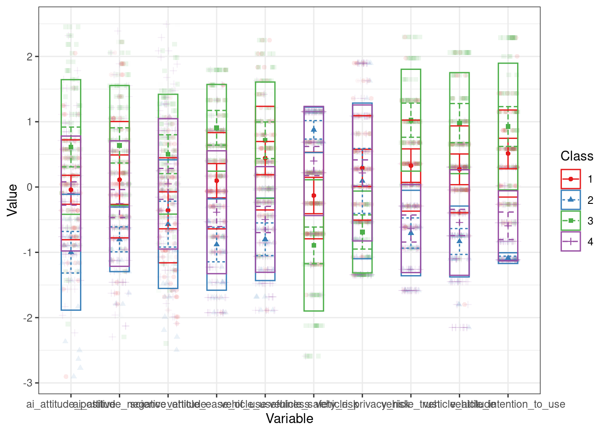

library(tidyverse)
library(tidyLPA)
library(gt)
library(psych)AIC: Analysis
Setup
Loading packages
Load custom functions
source(here::here("R/utils.R"))Read data
processed <- readr::read_csv(here::here("data/processed/aic_processed_data.csv"))
# colnames(processed)
processed <- processed |>
mutate(
is_ai = case_when(is_ai == 0L ~ "No",
is_ai == 1L ~ "Yes"),
is_responsibility = case_when(is_responsibility == 0L ~ "No",
is_responsibility == 1L ~ "Yes"),
row_id = row_number()
)Demographic analysis
processed |>
select(k02_01, k02_03, k02_04, k02_05) |>
pivot_longer(cols = everything(), names_to = "variable") |>
calculate_percentage(response_var = value, grouping_var = variable) |>
mutate(
variable = case_when(
variable == "k02_01" ~ "Gender",
variable == "k02_03" ~ "Mother's highest education",
variable == "k02_04" ~ "Father's highest education",
variable == "k02_05" ~ "Economic status"
),
factor = if_else(!duplicated(variable), variable, NA_character_)
) |>
select(factor, value, n, percentage) |>
gt() |>
tab_options(table.font.size = "small") |>
fmt_missing(columns = everything(), missing_text = "") |>
cols_label(
value = md("**Value**"),
n = md("**N**"),
percentage = md("**Percentage**"),
factor = md("**Factor**")
)Warning: Since gt v0.6.0 the `fmt_missing()` function is deprecated and will soon be
removed.
• Use the `sub_missing()` function instead.
This warning is displayed once every 8 hours.| Factor | Value | N | Percentage |
|---|---|---|---|
| Gender | Female | 253 | 79.81 |
| Male | 62 | 19.56 | |
| Wishes not to respond | 2 | 0.63 | |
| Mother's highest education | Elementary school | 7 | 2.21 |
| Highschool | 127 | 40.06 | |
| PhD | 13 | 4.10 | |
| University BA | 115 | 36.28 | |
| University MA | 55 | 17.35 | |
| Father's highest education | Elementary school | 11 | 3.47 |
| Highschool | 154 | 48.58 | |
| PhD | 17 | 5.36 | |
| University BA | 76 | 23.97 | |
| University MA | 59 | 18.61 | |
| Economic status | Bottom 30% | 10 | 3.15 |
| Middle 40% | 268 | 84.54 | |
| Top 30% | 39 | 12.30 |
How often do you use ChatGPT or other generative AI tools?
processed |>
calculate_percentage(response_var = k03_01) |>
mutate(
k03_01 = case_when(
k03_01 == "Soha" ~ "Never",
k03_01 == "Naponta" ~ "Daily",
k03_01 == "Naponta többször" ~ "Multiple times daily",
k03_01 == "Hetente egyszer" ~ "Once a week",
k03_01 == "Hetente többször" ~ "Multiple times weekly",
k03_01 == "Havonta kevesebb mint egyszer" ~ "Less than once monthly",
k03_01 == "Havonta egyszer" ~ "Once monthly"
),
k03_01 = factor(k03_01, levels = c("Never", "Daily", "Multiple times daily", "Once a week", "Multiple times weekly", "Less than once monthly", "Once monthly"))
) |>
arrange(k03_01) |>
select(-N, -relative_frequency) |>
rename(levels = k03_01) |>
gt() |>
tab_options(table.font.size = "small") |>
fmt_missing(columns = everything(), missing_text = "") |>
cols_label(
levels = md("**Levels**"),
n = md("**N**"),
percentage = md("**Percentage**"),
)| Levels | N | Percentage |
|---|---|---|
| Never | 33 | 10.41 |
| Daily | 24 | 7.57 |
| Multiple times daily | 16 | 5.05 |
| Once a week | 57 | 17.98 |
| Multiple times weekly | 72 | 22.71 |
| Less than once monthly | 51 | 16.09 |
| Once monthly | 64 | 20.19 |
Main effects
AI use main effect.
processed |>
group_by(is_ai) |>
summarise(across(
starts_with("k01_02_i"),
list(
mean = ~ round(mean(.x, na.rm = TRUE), 2),
sd = ~ round(sd(.x, na.rm = TRUE), 2),
n = ~ n()
),
.names = "{.col}-{.fn}"
)) |>
pivot_longer(
-is_ai,
names_to = c("items", "stat"),
names_sep = "-",
values_to = "values"
) |>
pivot_wider(names_from = is_ai, values_from = values) |>
pivot_wider(names_from = stat, values_from = c(No, Yes)) |>
mutate(mean_diff = round(No_mean - Yes_mean, 2),
sd_diff = round(sqrt((No_sd ^ 2 / No_n) + (Yes_sd ^ 2 / Yes_n)), 2)) |>
mutate(
No = paste(No_mean, No_sd, sep = "/"),
Yes = paste(Yes_mean, Yes_sd, sep = "/"),
Difference = paste(mean_diff, sd_diff, sep = "/")
) |>
select(items, No, Yes, Difference) |>
outcome_var_rename(items) |>
gt() | items | No | Yes | Difference |
|---|---|---|---|
| I believe the research results described in the summary are unreliable. | 4.93/1.43 | 4.84/1.43 | 0.09/0.16 |
| The conclusions drawn in the summary seem well-founded based on the methodology described there. | 4.77/1.35 | 4.98/1.28 | -0.21/0.15 |
| I would be willing to reference the presented results in discussions related to the topic based on the summary. | 4.28/1.52 | 4.31/1.67 | -0.03/0.18 |
| I trust the accuracy of the results reported in the summary. | 4.58/1.38 | 4.64/1.46 | -0.06/0.16 |
| According to the summary, this research does not provide valuable information on reducing adolescent obesity. | 5.24/1.54 | 5.38/1.36 | -0.14/0.16 |
| The study appears to have been conducted consistently and with great care by the researchers. | 4.62/1.36 | 4.55/1.33 | 0.07/0.15 |
| If other researchers were to re-examine the exact same question, they would likely find the intervention equally effective. | 4.44/1.41 | 4.38/1.42 | 0.06/0.16 |
| If I had a child of this age, I would not allow this program to be implemented in their school. | 5.47/1.62 | 5.82/1.3 | -0.35/0.17 |
| I support legally mandating the introduction of these obesity-reducing methods in schools based on this article. | 4.16/1.73 | 4.15/1.81 | 0.01/0.2 |
Responsibility main effect.
processed |>
group_by(is_responsibility) |>
summarise(across(
starts_with("k01_02_i"),
list(
mean = ~ round(mean(.x, na.rm = TRUE), 2),
sd = ~ round(sd(.x, na.rm = TRUE), 2),
n = ~ n()
),
.names = "{.col}-{.fn}"
)) |>
pivot_longer(
-is_responsibility,
names_to = c("items", "stat"),
names_sep = "-",
values_to = "values"
) |>
pivot_wider(names_from = is_responsibility, values_from = values) |>
pivot_wider(names_from = stat, values_from = c(No, Yes)) |>
mutate(mean_diff = round(No_mean - Yes_mean, 2),
sd_diff = round(sqrt((No_sd ^ 2 / No_n) + (Yes_sd ^ 2 / Yes_n)), 2)) |>
mutate(
No = paste(No_mean, No_sd, sep = "/"),
Yes = paste(Yes_mean, Yes_sd, sep = "/"),
Difference = paste(mean_diff, sd_diff, sep = "/")
) |>
select(items, No, Yes, Difference) |>
outcome_var_rename(items) |>
gt() | items | No | Yes | Difference |
|---|---|---|---|
| I believe the research results described in the summary are unreliable. | 4.82/1.44 | 4.96/1.41 | -0.14/0.16 |
| The conclusions drawn in the summary seem well-founded based on the methodology described there. | 4.95/1.32 | 4.8/1.31 | 0.15/0.15 |
| I would be willing to reference the presented results in discussions related to the topic based on the summary. | 4.41/1.66 | 4.17/1.53 | 0.24/0.18 |
| I trust the accuracy of the results reported in the summary. | 4.74/1.43 | 4.46/1.4 | 0.28/0.16 |
| According to the summary, this research does not provide valuable information on reducing adolescent obesity. | 5.37/1.44 | 5.26/1.47 | 0.11/0.16 |
| The study appears to have been conducted consistently and with great care by the researchers. | 4.68/1.36 | 4.48/1.31 | 0.2/0.15 |
| If other researchers were to re-examine the exact same question, they would likely find the intervention equally effective. | 4.56/1.36 | 4.25/1.45 | 0.31/0.16 |
| If I had a child of this age, I would not allow this program to be implemented in their school. | 5.73/1.48 | 5.57/1.46 | 0.16/0.17 |
| I support legally mandating the introduction of these obesity-reducing methods in schools based on this article. | 4.25/1.66 | 4.05/1.89 | 0.2/0.2 |
Tables for the main outcome variable based on demographic variables.
Gender.
processed |>
filter(k02_01 != "Wishes not to respond") |>
group_by(k02_01) |>
summarise(across(
starts_with("k01_02_i"),
list(
mean = ~ round(mean(.x, na.rm = TRUE), 2),
sd = ~ round(sd(.x, na.rm = TRUE), 2),
n = ~ n()
),
.names = "{.col}-{.fn}"
)) |>
pivot_longer(
-k02_01,
names_to = c("items", "stat"),
names_sep = "-",
values_to = "values"
) |>
pivot_wider(names_from = k02_01, values_from = values) |>
pivot_wider(names_from = stat, values_from = c(Male, Female)) |>
mutate(mean_diff = round(Male_mean - Female_mean, 2),
sd_diff = round(sqrt((Male_sd ^ 2 / Male_n) + (Female_sd ^ 2 / Female_n)), 2)) |>
mutate(
Male = paste(Male_mean, Male_sd, sep = "/"),
Female = paste(Female_mean, Female_sd, sep = "/"),
Difference = paste(mean_diff, sd_diff, sep = "/")
) |>
select(items, Male, Female, Difference) |>
outcome_var_rename(items) |>
gt() | items | Male | Female | Difference |
|---|---|---|---|
| I believe the research results described in the summary are unreliable. | 4.98/1.4 | 4.86/1.44 | 0.12/0.2 |
| The conclusions drawn in the summary seem well-founded based on the methodology described there. | 4.71/1.4 | 4.92/1.3 | -0.21/0.2 |
| I would be willing to reference the presented results in discussions related to the topic based on the summary. | 4.13/1.67 | 4.35/1.58 | -0.22/0.23 |
| I trust the accuracy of the results reported in the summary. | 4.65/1.44 | 4.6/1.42 | 0.05/0.2 |
| According to the summary, this research does not provide valuable information on reducing adolescent obesity. | 5.13/1.55 | 5.36/1.43 | -0.23/0.22 |
| The study appears to have been conducted consistently and with great care by the researchers. | 4.63/1.3 | 4.58/1.36 | 0.05/0.19 |
| If other researchers were to re-examine the exact same question, they would likely find the intervention equally effective. | 4.42/1.42 | 4.4/1.41 | 0.02/0.2 |
| If I had a child of this age, I would not allow this program to be implemented in their school. | 5.32/1.68 | 5.74/1.41 | -0.42/0.23 |
| I support legally mandating the introduction of these obesity-reducing methods in schools based on this article. | 3.87/1.77 | 4.23/1.78 | -0.36/0.25 |
Mother’s education.
processed |>
group_by(k02_03) |>
summarise(across(
starts_with("k01_02_i"),
list(
mean = ~ round(mean(.x, na.rm = TRUE), 2),
sd = ~ round(sd(.x, na.rm = TRUE), 2),
n = ~ n()
),
.names = "{.col}-{.fn}"
)) |>
pivot_longer(
-k02_03,
names_to = c("items", "stat"),
names_sep = "-",
values_to = "values"
) |>
pivot_wider(names_from = k02_03, values_from = values) |>
pivot_wider(
names_from = stat,
values_from = c(
`Elementary school`,
Highschool,
PhD,
`University BA`,
`University MA`
)
) |>
mutate(
mean_diff = round(`Elementary school_mean` - PhD_mean, 2),
sd_diff = round(sqrt((`Elementary school_sd` ^ 2 / `Elementary school_n`) + (PhD_sd ^ 2 / PhD_n)
), 2)
) |>
mutate(
`Elementary school` = paste(`Elementary school_mean`, `Elementary school_sd`, sep = "/"),
Highschool = paste(Highschool_mean, Highschool_sd, sep = "/"),
`University BA` = paste(`University BA_mean`, `University BA_sd`, sep = "/"),
`University MA` = paste(`University MA_mean`, `University MA_sd`, sep = "/"),
PhD = paste(PhD_mean, PhD_sd, sep = "/"),
Difference = paste(mean_diff, sd_diff, sep = "/")
) |>
select(
items,
`Elementary school`,
Highschool,
`University BA`,
`University MA`,
PhD,
Difference
) |>
outcome_var_rename(items) |>
gt()| items | Elementary school | Highschool | University BA | University MA | PhD | Difference |
|---|---|---|---|---|---|---|
| I believe the research results described in the summary are unreliable. | 5/1.15 | 4.68/1.34 | 5.23/1.53 | 4.75/1.38 | 4.46/1.13 | 0.54/0.54 |
| The conclusions drawn in the summary seem well-founded based on the methodology described there. | 4.14/1.35 | 4.76/1.22 | 5.13/1.37 | 4.95/1.25 | 3.92/1.38 | 0.22/0.64 |
| I would be willing to reference the presented results in discussions related to the topic based on the summary. | 4/1.15 | 3.9/1.48 | 4.7/1.72 | 4.58/1.47 | 3.46/1.2 | 0.54/0.55 |
| I trust the accuracy of the results reported in the summary. | 4.29/1.25 | 4.29/1.3 | 4.97/1.49 | 4.67/1.38 | 4.38/1.56 | -0.09/0.64 |
| According to the summary, this research does not provide valuable information on reducing adolescent obesity. | 4.29/1.7 | 5.09/1.46 | 5.69/1.42 | 5.4/1.26 | 4.38/1.5 | -0.09/0.77 |
| The study appears to have been conducted consistently and with great care by the researchers. | 4.57/1.13 | 4.39/1.31 | 4.85/1.45 | 4.65/1.19 | 3.85/0.9 | 0.72/0.49 |
| If other researchers were to re-examine the exact same question, they would likely find the intervention equally effective. | 4.57/1.51 | 4.12/1.4 | 4.66/1.45 | 4.6/1.33 | 4.15/1.07 | 0.42/0.64 |
| If I had a child of this age, I would not allow this program to be implemented in their school. | 5.71/1.25 | 5.56/1.4 | 5.75/1.63 | 5.85/1.22 | 4.77/1.54 | 0.94/0.64 |
| I support legally mandating the introduction of these obesity-reducing methods in schools based on this article. | 3.86/1.95 | 3.82/1.73 | 4.56/1.87 | 4.16/1.52 | 4/1.63 | -0.14/0.86 |
Father’s education.
processed |>
group_by(k02_04) |>
summarise(across(
starts_with("k01_02_i"),
list(
mean = ~ round(mean(.x, na.rm = TRUE), 2),
sd = ~ round(sd(.x, na.rm = TRUE), 2),
n = ~ n()
),
.names = "{.col}-{.fn}"
)) |>
pivot_longer(
-k02_04,
names_to = c("items", "stat"),
names_sep = "-",
values_to = "values"
) |>
pivot_wider(names_from = k02_04, values_from = values) |>
pivot_wider(
names_from = stat,
values_from = c(
`Elementary school`,
Highschool,
PhD,
`University BA`,
`University MA`
)
) |>
mutate(
mean_diff = round(`Elementary school_mean` - PhD_mean, 2),
sd_diff = round(sqrt((`Elementary school_sd` ^ 2 / `Elementary school_n`) + (PhD_sd ^ 2 / PhD_n)
), 2)
) |>
mutate(
`Elementary school` = paste(`Elementary school_mean`, `Elementary school_sd`, sep = "/"),
Highschool = paste(Highschool_mean, Highschool_sd, sep = "/"),
`University BA` = paste(`University BA_mean`, `University BA_sd`, sep = "/"),
`University MA` = paste(`University MA_mean`, `University MA_sd`, sep = "/"),
PhD = paste(PhD_mean, PhD_sd, sep = "/"),
Difference = paste(mean_diff, sd_diff, sep = "/")
) |>
select(
items,
`Elementary school`,
Highschool,
`University BA`,
`University MA`,
PhD,
Difference
) |>
outcome_var_rename(items) |>
gt()| items | Elementary school | Highschool | University BA | University MA | PhD | Difference |
|---|---|---|---|---|---|---|
| I believe the research results described in the summary are unreliable. | 5.09/1.45 | 4.92/1.37 | 4.78/1.58 | 4.92/1.36 | 4.82/1.55 | 0.27/0.58 |
| The conclusions drawn in the summary seem well-founded based on the methodology described there. | 5.18/1.47 | 4.85/1.3 | 4.96/1.28 | 4.76/1.44 | 5/1.17 | 0.18/0.53 |
| I would be willing to reference the presented results in discussions related to the topic based on the summary. | 4.55/1.51 | 4.28/1.57 | 4.28/1.69 | 4.19/1.59 | 4.71/1.61 | -0.16/0.6 |
| I trust the accuracy of the results reported in the summary. | 4.64/1.43 | 4.64/1.36 | 4.55/1.55 | 4.54/1.42 | 4.76/1.48 | -0.12/0.56 |
| According to the summary, this research does not provide valuable information on reducing adolescent obesity. | 4.82/1.78 | 5.36/1.46 | 5.26/1.39 | 5.41/1.44 | 5.18/1.55 | -0.36/0.66 |
| The study appears to have been conducted consistently and with great care by the researchers. | 4.55/1.63 | 4.69/1.32 | 4.5/1.44 | 4.36/1.27 | 4.76/1.15 | -0.21/0.57 |
| If other researchers were to re-examine the exact same question, they would likely find the intervention equally effective. | 4.18/1.47 | 4.39/1.4 | 4.3/1.57 | 4.59/1.23 | 4.59/1.42 | -0.41/0.56 |
| If I had a child of this age, I would not allow this program to be implemented in their school. | 6/0.89 | 5.69/1.41 | 5.34/1.75 | 5.78/1.38 | 6/1.12 | 0/0.38 |
| I support legally mandating the introduction of these obesity-reducing methods in schools based on this article. | 4/1.84 | 4.19/1.81 | 4.17/1.89 | 4.27/1.5 | 3.47/1.74 | 0.53/0.7 |
Economic status.
processed |>
group_by(k02_05) |>
summarise(across(
starts_with("k01_02_i"),
list(
mean = ~ round(mean(.x, na.rm = TRUE), 2),
sd = ~ round(sd(.x, na.rm = TRUE), 2),
n = ~ n()
),
.names = "{.col}-{.fn}"
)) |>
pivot_longer(
-k02_05,
names_to = c("items", "stat"),
names_sep = "-",
values_to = "values"
) |>
pivot_wider(names_from = k02_05, values_from = values) |>
pivot_wider(
names_from = stat,
values_from = c(
`Bottom 30%`,
`Middle 40%`,
`Top 30%`
)
) |>
mutate(
mean_diff = round(`Bottom 30%_mean` - `Top 30%_mean`, 2),
sd_diff = round(sqrt((`Bottom 30%_sd` ^ 2 / `Bottom 30%_n`) + (`Top 30%_sd` ^ 2 / `Top 30%_n`)
), 2)
) |>
mutate(
`Bottom 30%` = paste(`Bottom 30%_mean`, `Bottom 30%_sd`, sep = "/"),
`Middle 40%` = paste(`Middle 40%_mean`, `Middle 40%_sd`, sep = "/"),
`Top 30%` = paste(`Top 30%_mean`, `Top 30%_sd`, sep = "/"),
Difference = paste(mean_diff, sd_diff, sep = "/")
) |>
select(
items,
`Bottom 30%`,
`Middle 40%`,
`Top 30%`,
Difference
) |>
outcome_var_rename(items) |>
gt()| items | Bottom 30% | Middle 40% | Top 30% | Difference |
|---|---|---|---|---|
| I believe the research results described in the summary are unreliable. | 5.3/1.06 | 4.87/1.43 | 4.92/1.49 | 0.38/0.41 |
| The conclusions drawn in the summary seem well-founded based on the methodology described there. | 4.2/1.69 | 4.89/1.29 | 4.97/1.4 | -0.77/0.58 |
| I would be willing to reference the presented results in discussions related to the topic based on the summary. | 3.5/1.58 | 4.28/1.61 | 4.56/1.52 | -1.06/0.56 |
| I trust the accuracy of the results reported in the summary. | 3.7/1.49 | 4.62/1.43 | 4.74/1.29 | -1.04/0.51 |
| According to the summary, this research does not provide valuable information on reducing adolescent obesity. | 5/1.33 | 5.32/1.44 | 5.38/1.62 | -0.38/0.49 |
| The study appears to have been conducted consistently and with great care by the researchers. | 3.8/1.69 | 4.63/1.32 | 4.49/1.39 | -0.69/0.58 |
| If other researchers were to re-examine the exact same question, they would likely find the intervention equally effective. | 3.6/1.51 | 4.39/1.4 | 4.77/1.4 | -1.17/0.53 |
| If I had a child of this age, I would not allow this program to be implemented in their school. | 5.1/1.2 | 5.64/1.46 | 5.87/1.59 | -0.77/0.46 |
| I support legally mandating the introduction of these obesity-reducing methods in schools based on this article. | 3.1/1.73 | 4.14/1.77 | 4.51/1.7 | -1.41/0.61 |
Interaction
Interaction effects for the main outcome variable between modifying factors and AI use.
Gender.
processed |>
filter(k02_01 != "Wishes not to respond") |>
create_interaction_table(response_vars = starts_with("k01_02_i"), grouping_var = is_ai, factor_var = k02_01)`summarise()` has grouped output by 'k02_01'. You can override using the
`.groups` argument.| Items | Female | Male | ||||
|---|---|---|---|---|---|---|
| No | Yes | Difference | No | Yes | Difference | |
| I believe the research results described in the summary are unreliable. | 4.96/1.43 | 4.76/1.44 | 0.2/0.18 | 4.82/1.44 | 5.12/1.37 | -0.3/0.36 |
| The conclusions drawn in the summary seem well-founded based on the methodology described there. | 4.8/1.35 | 5.03/1.25 | -0.23/0.16 | 4.61/1.4 | 4.79/1.41 | -0.18/0.36 |
| I would be willing to reference the presented results in discussions related to the topic based on the summary. | 4.37/1.49 | 4.34/1.65 | 0.03/0.2 | 3.96/1.6 | 4.26/1.75 | -0.3/0.43 |
| I trust the accuracy of the results reported in the summary. | 4.63/1.37 | 4.58/1.47 | 0.05/0.18 | 4.39/1.45 | 4.85/1.42 | -0.46/0.37 |
| According to the summary, this research does not provide valuable information on reducing adolescent obesity. | 5.28/1.51 | 5.42/1.35 | -0.14/0.18 | 5.04/1.71 | 5.21/1.43 | -0.17/0.41 |
| The study appears to have been conducted consistently and with great care by the researchers. | 4.6/1.37 | 4.55/1.36 | 0.05/0.17 | 4.71/1.36 | 4.56/1.26 | 0.15/0.34 |
| If other researchers were to re-examine the exact same question, they would likely find the intervention equally effective. | 4.4/1.43 | 4.41/1.4 | -0.01/0.18 | 4.64/1.34 | 4.24/1.48 | 0.4/0.36 |
| If I had a child of this age, I would not allow this program to be implemented in their school. | 5.54/1.56 | 5.92/1.23 | -0.38/0.18 | 5.21/1.89 | 5.41/1.5 | -0.2/0.44 |
| I support legally mandating the introduction of these obesity-reducing methods in schools based on this article. | 4.16/1.74 | 4.28/1.81 | -0.12/0.22 | 4.14/1.76 | 3.65/1.77 | 0.49/0.45 |
Mother’s education. Excluded elementary school because of the low number of responses.
count(processed, k02_03)# A tibble: 5 × 2
k02_03 n
<chr> <int>
1 Elementary school 7
2 Highschool 127
3 PhD 13
4 University BA 115
5 University MA 55processed |>
filter(k02_03 != "Elementary school") |>
create_interaction_table(response_vars = starts_with("k01_02_i"), grouping_var = is_ai, factor_var = k02_03, factor_levels = c("Highschool", "University BA", "University MA", "PhD"))`summarise()` has grouped output by 'k02_03'. You can override using the
`.groups` argument.| Items | Highschool | University BA | University MA | PhD | ||||||||
|---|---|---|---|---|---|---|---|---|---|---|---|---|
| No | Yes | Difference | No | Yes | Difference | No | Yes | Difference | No | Yes | Difference | |
| I believe the research results described in the summary are unreliable. | 4.76/1.28 | 4.61/1.39 | 0.15/0.24 | 5.3/1.5 | 5.16/1.58 | 0.14/0.29 | 4.77/1.58 | 4.72/1.19 | 0.05/0.38 | 4.12/1.13 | 5/1 | -0.88/0.6 |
| The conclusions drawn in the summary seem well-founded based on the methodology described there. | 4.64/1.21 | 4.86/1.24 | -0.22/0.22 | 5.09/1.41 | 5.17/1.35 | -0.08/0.26 | 4.88/1.34 | 5/1.2 | -0.12/0.34 | 3.5/1.07 | 4.6/1.67 | -1.1/0.84 |
| I would be willing to reference the presented results in discussions related to the topic based on the summary. | 3.78/1.37 | 3.99/1.56 | -0.21/0.26 | 4.7/1.65 | 4.71/1.81 | -0.01/0.32 | 4.73/1.34 | 4.45/1.59 | 0.28/0.4 | 3.38/1.06 | 3.6/1.52 | -0.22/0.78 |
| I trust the accuracy of the results reported in the summary. | 4.25/1.19 | 4.32/1.38 | -0.07/0.23 | 4.88/1.51 | 5.07/1.47 | -0.19/0.28 | 4.81/1.33 | 4.55/1.43 | 0.26/0.37 | 4.25/1.49 | 4.6/1.82 | -0.35/0.97 |
| According to the summary, this research does not provide valuable information on reducing adolescent obesity. | 5.09/1.48 | 5.1/1.45 | -0.01/0.26 | 5.77/1.48 | 5.6/1.36 | 0.17/0.27 | 5.19/1.33 | 5.59/1.18 | -0.4/0.34 | 3.62/1.41 | 5.6/0.55 | -1.98/0.56 |
| The study appears to have been conducted consistently and with great care by the researchers. | 4.44/1.33 | 4.35/1.3 | 0.09/0.24 | 4.84/1.53 | 4.86/1.37 | -0.02/0.27 | 4.85/1.01 | 4.48/1.33 | 0.37/0.32 | 3.62/0.74 | 4.2/1.1 | -0.58/0.56 |
| If other researchers were to re-examine the exact same question, they would likely find the intervention equally effective. | 4.07/1.4 | 4.15/1.4 | -0.08/0.25 | 4.79/1.45 | 4.53/1.45 | 0.26/0.27 | 4.65/1.23 | 4.55/1.43 | 0.1/0.36 | 3.88/1.13 | 4.6/0.89 | -0.72/0.56 |
| If I had a child of this age, I would not allow this program to be implemented in their school. | 5.31/1.51 | 5.75/1.29 | -0.44/0.25 | 5.68/1.84 | 5.81/1.41 | -0.13/0.31 | 5.69/1.26 | 6/1.2 | -0.31/0.33 | 4.12/1.46 | 5.8/1.1 | -1.68/0.71 |
| I support legally mandating the introduction of these obesity-reducing methods in schools based on this article. | 3.71/1.67 | 3.9/1.78 | -0.19/0.31 | 4.6/1.92 | 4.52/1.85 | 0.08/0.35 | 4.23/1.27 | 4.1/1.74 | 0.13/0.41 | 3.75/1.58 | 4.4/1.82 | -0.65/0.99 |
Father’s education.
count(processed, k02_04)# A tibble: 5 × 2
k02_04 n
<chr> <int>
1 Elementary school 11
2 Highschool 154
3 PhD 17
4 University BA 76
5 University MA 59processed |>
create_interaction_table(response_vars = starts_with("k01_02_i"), grouping_var = is_ai, factor_var = k02_04, factor_levels = c("Elementary school", "Highschool", "University BA", "University MA", "PhD"))`summarise()` has grouped output by 'k02_04'. You can override using the
`.groups` argument.| Items | Elementary school | Highschool | University BA | University MA | PhD | ||||||||||
|---|---|---|---|---|---|---|---|---|---|---|---|---|---|---|---|
| No | Yes | Difference | No | Yes | Difference | No | Yes | Difference | No | Yes | Difference | No | Yes | Difference | |
| I believe the research results described in the summary are unreliable. | 5.33/0.82 | 4.8/2.05 | 0.53/0.98 | 4.99/1.3 | 4.86/1.44 | 0.13/0.22 | 5.03/1.67 | 4.59/1.5 | 0.44/0.37 | 4.69/1.51 | 5.13/1.17 | -0.44/0.35 | 4.73/1.62 | 5/1.55 | -0.27/0.8 |
| The conclusions drawn in the summary seem well-founded based on the methodology described there. | 5.5/1.05 | 4.8/1.92 | 0.7/0.96 | 4.7/1.32 | 4.99/1.27 | -0.29/0.21 | 4.97/1.36 | 4.95/1.24 | 0.02/0.3 | 4.62/1.5 | 4.9/1.4 | -0.28/0.38 | 4.64/1.29 | 5.67/0.52 | -1.03/0.44 |
| I would be willing to reference the presented results in discussions related to the topic based on the summary. | 4.5/1.38 | 4.6/1.82 | -0.1/0.99 | 4.22/1.48 | 4.34/1.66 | -0.12/0.25 | 4.44/1.74 | 4.16/1.67 | 0.28/0.4 | 4.1/1.47 | 4.27/1.72 | -0.17/0.42 | 4.55/1.51 | 5/1.9 | -0.45/0.9 |
| I trust the accuracy of the results reported in the summary. | 5/1.1 | 4.2/1.79 | 0.8/0.92 | 4.62/1.24 | 4.66/1.47 | -0.04/0.22 | 4.59/1.72 | 4.52/1.44 | 0.07/0.37 | 4.45/1.38 | 4.63/1.47 | -0.18/0.37 | 4.36/1.5 | 5.5/1.22 | -1.14/0.67 |
| According to the summary, this research does not provide valuable information on reducing adolescent obesity. | 4.5/1.87 | 5.2/1.79 | -0.7/1.11 | 5.16/1.57 | 5.54/1.34 | -0.38/0.24 | 5.38/1.52 | 5.18/1.3 | 0.2/0.33 | 5.66/1.37 | 5.17/1.49 | 0.49/0.37 | 4.73/1.62 | 6/1.1 | -1.27/0.66 |
| The study appears to have been conducted consistently and with great care by the researchers. | 4.83/1.6 | 4.2/1.79 | 0.63/1.03 | 4.73/1.31 | 4.66/1.34 | 0.07/0.21 | 4.56/1.74 | 4.45/1.19 | 0.11/0.36 | 4.41/1.12 | 4.3/1.42 | 0.11/0.33 | 4.45/0.93 | 5.33/1.37 | -0.88/0.63 |
| If other researchers were to re-examine the exact same question, they would likely find the intervention equally effective. | 4.33/1.21 | 4/1.87 | 0.33/0.97 | 4.34/1.35 | 4.44/1.45 | -0.1/0.23 | 4.53/1.74 | 4.14/1.42 | 0.39/0.37 | 4.59/1.32 | 4.6/1.16 | -0.01/0.32 | 4.55/1.21 | 4.67/1.86 | -0.12/0.84 |
| If I had a child of this age, I would not allow this program to be implemented in their school. | 6.17/0.41 | 5.8/1.3 | 0.37/0.6 | 5.5/1.55 | 5.86/1.26 | -0.36/0.23 | 5.16/2.03 | 5.48/1.52 | -0.32/0.43 | 5.52/1.62 | 6.03/1.07 | -0.51/0.36 | 5.64/1.21 | 6.67/0.52 | -1.03/0.42 |
| I support legally mandating the introduction of these obesity-reducing methods in schools based on this article. | 4.5/1.38 | 3.4/2.3 | 1.1/1.17 | 4.24/1.73 | 4.14/1.89 | 0.1/0.29 | 4.16/2.03 | 4.18/1.81 | -0.02/0.45 | 4.21/1.37 | 4.33/1.63 | -0.12/0.39 | 3.27/1.85 | 3.83/1.6 | -0.56/0.86 |
Economic status.
count(processed, k02_05)# A tibble: 3 × 2
k02_05 n
<chr> <int>
1 Bottom 30% 10
2 Middle 40% 268
3 Top 30% 39processed |>
create_interaction_table(response_vars = starts_with("k01_02_i"), grouping_var = is_ai, factor_var = k02_05)`summarise()` has grouped output by 'k02_05'. You can override using the
`.groups` argument.| Items | Bottom 30% | Middle 40% | Top 30% | ||||||
|---|---|---|---|---|---|---|---|---|---|
| No | Yes | Difference | No | Yes | Difference | No | Yes | Difference | |
| I believe the research results described in the summary are unreliable. | 4.33/0.58 | 5.71/0.95 | -1.38/0.49 | 4.94/1.39 | 4.8/1.47 | 0.14/0.17 | 5/1.76 | 4.85/1.23 | 0.15/0.49 |
| The conclusions drawn in the summary seem well-founded based on the methodology described there. | 4/0 | 4.29/2.06 | -0.29/0.78 | 4.74/1.35 | 5.04/1.21 | -0.3/0.16 | 5.11/1.41 | 4.85/1.42 | 0.26/0.45 |
| I would be willing to reference the presented results in discussions related to the topic based on the summary. | 3/1 | 3.71/1.8 | -0.71/0.89 | 4.24/1.54 | 4.33/1.67 | -0.09/0.2 | 4.74/1.33 | 4.4/1.7 | 0.34/0.49 |
| I trust the accuracy of the results reported in the summary. | 3/0 | 4/1.73 | -1/0.65 | 4.58/1.39 | 4.67/1.46 | -0.09/0.17 | 4.84/1.26 | 4.65/1.35 | 0.19/0.42 |
| According to the summary, this research does not provide valuable information on reducing adolescent obesity. | 3.67/1.53 | 5.57/0.79 | -1.9/0.93 | 5.25/1.53 | 5.38/1.35 | -0.13/0.18 | 5.42/1.61 | 5.35/1.66 | 0.07/0.52 |
| The study appears to have been conducted consistently and with great care by the researchers. | 3/1 | 4.14/1.86 | -1.14/0.91 | 4.64/1.34 | 4.62/1.3 | 0.02/0.16 | 4.74/1.41 | 4.25/1.37 | 0.49/0.45 |
| If other researchers were to re-examine the exact same question, they would likely find the intervention equally effective. | 2.67/0.58 | 4/1.63 | -1.33/0.7 | 4.41/1.39 | 4.37/1.41 | 0.04/0.17 | 4.95/1.39 | 4.6/1.43 | 0.35/0.45 |
| If I had a child of this age, I would not allow this program to be implemented in their school. | 5.33/1.15 | 5/1.29 | 0.33/0.82 | 5.39/1.62 | 5.87/1.25 | -0.48/0.18 | 6/1.67 | 5.75/1.55 | 0.25/0.52 |
| I support legally mandating the introduction of these obesity-reducing methods in schools based on this article. | 2/1 | 3.57/1.81 | -1.57/0.9 | 4.12/1.74 | 4.16/1.81 | -0.04/0.22 | 4.74/1.48 | 4.3/1.89 | 0.44/0.54 |
Interaction effects for the main outcome variable between modifying factors and explicit responsibility.
Gender.
processed |>
filter(k02_01 != "Wishes not to respond") |>
create_interaction_table(response_vars = starts_with("k01_02_i"), grouping_var = is_responsibility, factor_var = k02_01)`summarise()` has grouped output by 'k02_01'. You can override using the
`.groups` argument.| Items | Female | Male | ||||
|---|---|---|---|---|---|---|
| No | Yes | Difference | No | Yes | Difference | |
| I believe the research results described in the summary are unreliable. | 4.82/1.45 | 4.89/1.43 | -0.07/0.18 | 4.79/1.43 | 5.21/1.34 | -0.42/0.35 |
| The conclusions drawn in the summary seem well-founded based on the methodology described there. | 4.98/1.3 | 4.85/1.3 | 0.13/0.16 | 4.82/1.42 | 4.57/1.37 | 0.25/0.36 |
| I would be willing to reference the presented results in discussions related to the topic based on the summary. | 4.48/1.61 | 4.21/1.54 | 0.27/0.2 | 4.12/1.84 | 4.14/1.48 | -0.02/0.42 |
| I trust the accuracy of the results reported in the summary. | 4.75/1.46 | 4.45/1.37 | 0.3/0.18 | 4.74/1.33 | 4.54/1.57 | 0.2/0.37 |
| According to the summary, this research does not provide valuable information on reducing adolescent obesity. | 5.44/1.36 | 5.27/1.5 | 0.17/0.18 | 5.09/1.69 | 5.18/1.39 | -0.09/0.39 |
| The study appears to have been conducted consistently and with great care by the researchers. | 4.69/1.37 | 4.46/1.34 | 0.23/0.17 | 4.65/1.35 | 4.61/1.26 | 0.04/0.33 |
| If other researchers were to re-examine the exact same question, they would likely find the intervention equally effective. | 4.58/1.34 | 4.22/1.47 | 0.36/0.18 | 4.5/1.46 | 4.32/1.39 | 0.18/0.36 |
| If I had a child of this age, I would not allow this program to be implemented in their school. | 5.8/1.4 | 5.67/1.42 | 0.13/0.18 | 5.44/1.76 | 5.18/1.59 | 0.26/0.43 |
| I support legally mandating the introduction of these obesity-reducing methods in schools based on this article. | 4.38/1.6 | 4.06/1.93 | 0.32/0.22 | 3.74/1.78 | 4.04/1.77 | -0.3/0.45 |
Mother’s education. Excluded elementary school because of the low number of responses.
processed |>
filter(k02_03 != "Elementary school") |>
create_interaction_table(response_vars = starts_with("k01_02_i"), grouping_var = is_responsibility, factor_var = k02_03, factor_levels = c( "Highschool", "University BA", "University MA", "PhD"))`summarise()` has grouped output by 'k02_03'. You can override using the
`.groups` argument.| Items | Highschool | University BA | University MA | PhD | ||||||||
|---|---|---|---|---|---|---|---|---|---|---|---|---|
| No | Yes | Difference | No | Yes | Difference | No | Yes | Difference | No | Yes | Difference | |
| I believe the research results described in the summary are unreliable. | 4.51/1.29 | 4.82/1.37 | -0.31/0.24 | 5.06/1.65 | 5.42/1.38 | -0.36/0.28 | 4.88/1.34 | 4.57/1.44 | 0.31/0.38 | 4.62/1.06 | 4.2/1.3 | 0.42/0.69 |
| The conclusions drawn in the summary seem well-founded based on the methodology described there. | 4.66/1.24 | 4.85/1.21 | -0.19/0.22 | 5.18/1.37 | 5.08/1.38 | 0.1/0.26 | 5.22/1.24 | 4.57/1.2 | 0.65/0.33 | 4.12/1.55 | 3.6/1.14 | 0.52/0.75 |
| I would be willing to reference the presented results in discussions related to the topic based on the summary. | 3.9/1.54 | 3.9/1.44 | 0/0.27 | 4.89/1.74 | 4.49/1.69 | 0.4/0.32 | 4.66/1.49 | 4.48/1.47 | 0.18/0.4 | 3.38/1.51 | 3.6/0.55 | -0.22/0.59 |
| I trust the accuracy of the results reported in the summary. | 4.41/1.22 | 4.19/1.36 | 0.22/0.23 | 5.08/1.53 | 4.85/1.45 | 0.23/0.28 | 4.88/1.36 | 4.39/1.37 | 0.49/0.37 | 4.12/1.89 | 4.8/0.84 | -0.68/0.77 |
| According to the summary, this research does not provide valuable information on reducing adolescent obesity. | 5.02/1.47 | 5.16/1.45 | -0.14/0.26 | 5.66/1.49 | 5.72/1.34 | -0.06/0.26 | 5.62/1.13 | 5.09/1.38 | 0.53/0.35 | 4.75/1.39 | 3.8/1.64 | 0.95/0.88 |
| The study appears to have been conducted consistently and with great care by the researchers. | 4.51/1.33 | 4.28/1.29 | 0.23/0.23 | 4.89/1.47 | 4.81/1.43 | 0.08/0.27 | 4.78/1.29 | 4.48/1.04 | 0.3/0.31 | 3.88/0.99 | 3.8/0.84 | 0.08/0.51 |
| If other researchers were to re-examine the exact same question, they would likely find the intervention equally effective. | 4.34/1.35 | 3.93/1.42 | 0.41/0.25 | 4.65/1.4 | 4.68/1.52 | -0.03/0.27 | 4.81/1.38 | 4.3/1.22 | 0.51/0.35 | 4.25/1.16 | 4/1 | 0.25/0.61 |
| If I had a child of this age, I would not allow this program to be implemented in their school. | 5.59/1.34 | 5.53/1.46 | 0.06/0.25 | 5.65/1.79 | 5.87/1.43 | -0.22/0.3 | 6.16/1.08 | 5.43/1.31 | 0.73/0.33 | 5.25/1.16 | 4/1.87 | 1.25/0.93 |
| I support legally mandating the introduction of these obesity-reducing methods in schools based on this article. | 3.88/1.61 | 3.76/1.84 | 0.12/0.31 | 4.53/1.81 | 4.58/1.97 | -0.05/0.36 | 4.41/1.32 | 3.83/1.75 | 0.58/0.43 | 4/1.85 | 4/1.41 | 0/0.91 |
Father’s education.
processed |>
create_interaction_table(response_vars = starts_with("k01_02_i"), grouping_var = is_responsibility, factor_var = k02_04, factor_levels = c("Elementary school", "Highschool", "University BA", "University MA", "PhD"))`summarise()` has grouped output by 'k02_04'. You can override using the
`.groups` argument.| Items | Elementary school | Highschool | University BA | University MA | PhD | ||||||||||
|---|---|---|---|---|---|---|---|---|---|---|---|---|---|---|---|
| No | Yes | Difference | No | Yes | Difference | No | Yes | Difference | No | Yes | Difference | No | Yes | Difference | |
| I believe the research results described in the summary are unreliable. | 5/1.15 | 5.25/2.06 | -0.25/1.12 | 4.82/1.37 | 5.03/1.37 | -0.21/0.22 | 4.69/1.75 | 4.88/1.37 | -0.19/0.36 | 5.03/1.25 | 4.79/1.47 | 0.24/0.36 | 4.5/1.41 | 5.11/1.69 | -0.61/0.75 |
| The conclusions drawn in the summary seem well-founded based on the methodology described there. | 5.57/0.98 | 4.5/2.08 | 1.07/1.1 | 4.77/1.34 | 4.94/1.26 | -0.17/0.21 | 5.19/1.21 | 4.68/1.32 | 0.51/0.29 | 5/1.49 | 4.52/1.38 | 0.48/0.37 | 4.75/1.28 | 5.22/1.09 | -0.47/0.58 |
| I would be willing to reference the presented results in discussions related to the topic based on the summary. | 4.86/0.69 | 4/2.45 | 0.86/1.25 | 4.35/1.65 | 4.21/1.5 | 0.14/0.25 | 4.62/1.77 | 3.85/1.52 | 0.77/0.38 | 4.27/1.7 | 4.1/1.5 | 0.17/0.42 | 4/1.69 | 5.33/1.32 | -1.33/0.74 |
| I trust the accuracy of the results reported in the summary. | 5/0.82 | 4/2.16 | 1/1.12 | 4.77/1.35 | 4.52/1.36 | 0.25/0.22 | 4.81/1.63 | 4.24/1.42 | 0.57/0.35 | 4.67/1.49 | 4.41/1.35 | 0.26/0.37 | 4.25/1.49 | 5.22/1.39 | -0.97/0.7 |
| According to the summary, this research does not provide valuable information on reducing adolescent obesity. | 4.71/1.5 | 5/2.45 | -0.29/1.35 | 5.39/1.51 | 5.32/1.43 | 0.07/0.24 | 5.38/1.43 | 5.12/1.34 | 0.26/0.32 | 5.63/1.22 | 5.17/1.63 | 0.46/0.38 | 4.62/1.51 | 5.67/1.5 | -1.05/0.73 |
| The study appears to have been conducted consistently and with great care by the researchers. | 5/1 | 3.75/2.36 | 1.25/1.24 | 4.71/1.44 | 4.68/1.2 | 0.03/0.21 | 4.69/1.49 | 4.26/1.36 | 0.43/0.33 | 4.53/1.22 | 4.17/1.31 | 0.36/0.33 | 4.62/0.74 | 4.89/1.45 | -0.27/0.55 |
| If other researchers were to re-examine the exact same question, they would likely find the intervention equally effective. | 4.29/1.11 | 4/2.16 | 0.29/1.16 | 4.53/1.3 | 4.25/1.48 | 0.28/0.22 | 4.62/1.59 | 3.91/1.46 | 0.71/0.35 | 4.67/1.3 | 4.52/1.18 | 0.15/0.32 | 4.38/1.3 | 4.78/1.56 | -0.4/0.69 |
| If I had a child of this age, I would not allow this program to be implemented in their school. | 6/0.58 | 6/1.41 | 0/0.74 | 5.69/1.42 | 5.69/1.42 | 0/0.23 | 5.4/1.89 | 5.26/1.58 | 0.14/0.4 | 6.2/1.1 | 5.34/1.52 | 0.86/0.35 | 5.75/1.28 | 6.22/0.97 | -0.47/0.56 |
| I support legally mandating the introduction of these obesity-reducing methods in schools based on this article. | 4.29/1.38 | 3.5/2.65 | 0.79/1.42 | 4.14/1.7 | 4.23/1.93 | -0.09/0.29 | 4.52/1.73 | 3.74/2.02 | 0.78/0.44 | 4.43/1.41 | 4.1/1.59 | 0.33/0.39 | 3.12/1.73 | 3.78/1.79 | -0.66/0.85 |
Economic status.
processed |>
create_interaction_table(response_vars = starts_with("k01_02_i"), grouping_var = is_responsibility, factor_var = k02_05)`summarise()` has grouped output by 'k02_05'. You can override using the
`.groups` argument.| Items | Bottom 30% | Middle 40% | Top 30% | ||||||
|---|---|---|---|---|---|---|---|---|---|
| No | Yes | Difference | No | Yes | Difference | No | Yes | Difference | |
| I believe the research results described in the summary are unreliable. | 5.5/0.71 | 5.25/1.16 | 0.25/0.65 | 4.76/1.45 | 4.98/1.4 | -0.22/0.17 | 5.14/1.39 | 4.65/1.62 | 0.49/0.49 |
| The conclusions drawn in the summary seem well-founded based on the methodology described there. | 3/2.83 | 4.5/1.41 | -1.5/2.06 | 4.95/1.26 | 4.83/1.32 | 0.12/0.16 | 5.14/1.52 | 4.76/1.25 | 0.38/0.44 |
| I would be willing to reference the presented results in discussions related to the topic based on the summary. | 2/0 | 3.88/1.55 | -1.88/0.55 | 4.38/1.66 | 4.18/1.55 | 0.2/0.2 | 4.82/1.56 | 4.24/1.44 | 0.58/0.48 |
| I trust the accuracy of the results reported in the summary. | 2.5/0.71 | 4/1.51 | -1.5/0.73 | 4.78/1.42 | 4.45/1.42 | 0.33/0.17 | 4.73/1.42 | 4.76/1.15 | -0.03/0.41 |
| According to the summary, this research does not provide valuable information on reducing adolescent obesity. | 5.5/0.71 | 4.88/1.46 | 0.62/0.72 | 5.34/1.45 | 5.29/1.42 | 0.05/0.18 | 5.5/1.44 | 5.24/1.86 | 0.26/0.55 |
| The study appears to have been conducted consistently and with great care by the researchers. | 2.5/0.71 | 4.12/1.73 | -1.62/0.79 | 4.69/1.34 | 4.55/1.29 | 0.14/0.16 | 4.82/1.44 | 4.06/1.25 | 0.76/0.43 |
| If other researchers were to re-examine the exact same question, they would likely find the intervention equally effective. | 3/1.41 | 3.75/1.58 | -0.75/1.14 | 4.51/1.33 | 4.26/1.46 | 0.25/0.17 | 5.05/1.43 | 4.41/1.33 | 0.64/0.44 |
| If I had a child of this age, I would not allow this program to be implemented in their school. | 4.5/2.12 | 5.25/1.04 | -0.75/1.54 | 5.75/1.42 | 5.52/1.5 | 0.23/0.18 | 5.68/1.84 | 6.12/1.22 | -0.44/0.49 |
| I support legally mandating the introduction of these obesity-reducing methods in schools based on this article. | 2/0 | 3.38/1.85 | -1.38/0.65 | 4.19/1.68 | 4.09/1.87 | 0.1/0.22 | 4.82/1.3 | 4.12/2.09 | 0.7/0.58 |
Latent Profile Analysis
Run the analysis.
# Filter the data for the LPA
renaming_map <- c(
"ai_attitude_positive" = "k03_02_positive",
"ai_attitude_negative" = "k03_02_negative",
"science_attitude" = "k04_01_composite",
"vehicle_ease_of_use" = "k06_01_ease_of_use",
"vehicle_usefulness" = "k06_01_usefulness",
"vehicle_safety_risk" = "k06_01_safety_risk",
"vehicle_privacy_risk" = "k06_01_privacy_risk",
"vehicle_trust" = "k06_01_trust",
"vehicle_attitude" = "k06_01_attitude",
"vehicle_intention_to_use" = "k06_01_intention_to_use"
)
lpa_data <- processed %>%
dplyr::select(row_id, k03_02_positive, k03_02_negative, k04_01_composite, k06_01_ease_of_use, k06_01_usefulness, k06_01_safety_risk, k06_01_privacy_risk, k06_01_trust, k06_01_attitude, k06_01_intention_to_use) %>%
dplyr::rename(!!!renaming_map)
lpa_data_scaled <- lpa_data %>%
mutate(across(-row_id, ~ as.vector(scale(.))))
# Fit the model with 5 profiles
lpa_model <- estimate_profiles(dplyr::select(lpa_data_scaled, -row_id), n_profiles = 1:5, models = c(1, 2, 3, 6))The 'variances'/'covariances' arguments were ignored in favor of the 'models' argument.Warning in (function (data, modelName = NULL, nboot = 999, level = 0.05, : some
model(s) could not be fitted!Warning: Mclust could not estimate model 2 with 4 classes.Warning: Mclust could not estimate model 2 with 5 classes.Warning:
One or more analyses resulted in warnings! Examine these analyses carefully: model_2_class_4, model_2_class_5# View the summary of the model
lpa_modeltidyLPA analysis using mclust:
Model Classes AIC BIC Entropy prob_min prob_max n_min n_max BLRT_p
1 1 9026.05 9101.23 1.00 1.00 1.00 1.00 1.00
1 2 8120.83 8237.36 0.89 0.96 0.97 0.44 0.56 0.01
1 3 7708.56 7866.43 0.92 0.96 0.96 0.16 0.49 0.01
1 4 7590.29 7789.51 0.87 0.90 0.96 0.13 0.31 0.01
1 5 7568.12 7808.69 0.84 0.78 0.94 0.12 0.31 0.01
2 1 9026.05 9101.23 1.00 1.00 1.00 1.00 1.00
2 2 8079.27 8233.38 0.90 0.97 0.98 0.50 0.50 0.01
2 3 7571.62 7804.67 0.94 0.96 0.98 0.19 0.52 0.01
2 4
2 5
3 1 7381.77 7626.10 1.00 1.00 1.00 1.00 1.00
3 2 7355.43 7641.11 0.77 0.92 0.95 0.35 0.65 0.01
3 3 7340.82 7667.84 0.84 0.89 0.97 0.10 0.52 0.01
3 4 7281.05 7649.43 0.85 0.86 0.95 0.10 0.40 0.01
3 5 7267.19 7676.91 0.86 0.85 0.94 0.05 0.33 0.01
6 1 7381.77 7626.10 1.00 1.00 1.00 1.00 1.00
6 2 7307.69 7800.11 0.71 0.92 0.92 0.47 0.53 0.01
6 3 7296.23 8036.74 0.86 0.91 0.97 0.23 0.52 0.14
6 4 7185.09 8173.68 0.88 0.91 1.00 0.10 0.41 0.01
6 5 7187.98 8424.66 0.91 0.93 0.99 0.11 0.26 0.29 # Get estimates
lpa_model6_class4 <- get_estimates(lpa_model$model_6_class_4)
lpa_model6_class4 Category Parameter
1 Means ai_attitude_positive
2 Means ai_attitude_negative
3 Means science_attitude
4 Means vehicle_ease_of_use
5 Means vehicle_usefulness
6 Means vehicle_safety_risk
7 Means vehicle_privacy_risk
8 Means vehicle_trust
9 Means vehicle_attitude
10 Means vehicle_intention_to_use
11 Variances ai_attitude_positive
12 Covariances ai_attitude_positive.WITH.ai_attitude_negative
13 Covariances ai_attitude_positive.WITH.science_attitude
14 Covariances ai_attitude_positive.WITH.vehicle_ease_of_use
15 Covariances ai_attitude_positive.WITH.vehicle_usefulness
16 Covariances ai_attitude_positive.WITH.vehicle_safety_risk
17 Covariances ai_attitude_positive.WITH.vehicle_privacy_risk
18 Covariances ai_attitude_positive.WITH.vehicle_trust
19 Covariances ai_attitude_positive.WITH.vehicle_attitude
20 Covariances ai_attitude_positive.WITH.vehicle_intention_to_use
22 Variances ai_attitude_negative
23 Covariances ai_attitude_negative.WITH.science_attitude
24 Covariances ai_attitude_negative.WITH.vehicle_ease_of_use
25 Covariances ai_attitude_negative.WITH.vehicle_usefulness
26 Covariances ai_attitude_negative.WITH.vehicle_safety_risk
27 Covariances ai_attitude_negative.WITH.vehicle_privacy_risk
28 Covariances ai_attitude_negative.WITH.vehicle_trust
29 Covariances ai_attitude_negative.WITH.vehicle_attitude
30 Covariances ai_attitude_negative.WITH.vehicle_intention_to_use
33 Variances science_attitude
34 Covariances science_attitude.WITH.vehicle_ease_of_use
35 Covariances science_attitude.WITH.vehicle_usefulness
36 Covariances science_attitude.WITH.vehicle_safety_risk
37 Covariances science_attitude.WITH.vehicle_privacy_risk
38 Covariances science_attitude.WITH.vehicle_trust
39 Covariances science_attitude.WITH.vehicle_attitude
40 Covariances science_attitude.WITH.vehicle_intention_to_use
44 Variances vehicle_ease_of_use
45 Covariances vehicle_ease_of_use.WITH.vehicle_usefulness
46 Covariances vehicle_ease_of_use.WITH.vehicle_safety_risk
47 Covariances vehicle_ease_of_use.WITH.vehicle_privacy_risk
48 Covariances vehicle_ease_of_use.WITH.vehicle_trust
49 Covariances vehicle_ease_of_use.WITH.vehicle_attitude
50 Covariances vehicle_ease_of_use.WITH.vehicle_intention_to_use
55 Variances vehicle_usefulness
56 Covariances vehicle_usefulness.WITH.vehicle_safety_risk
57 Covariances vehicle_usefulness.WITH.vehicle_privacy_risk
58 Covariances vehicle_usefulness.WITH.vehicle_trust
59 Covariances vehicle_usefulness.WITH.vehicle_attitude
60 Covariances vehicle_usefulness.WITH.vehicle_intention_to_use
66 Variances vehicle_safety_risk
67 Covariances vehicle_safety_risk.WITH.vehicle_privacy_risk
68 Covariances vehicle_safety_risk.WITH.vehicle_trust
69 Covariances vehicle_safety_risk.WITH.vehicle_attitude
70 Covariances vehicle_safety_risk.WITH.vehicle_intention_to_use
77 Variances vehicle_privacy_risk
78 Covariances vehicle_privacy_risk.WITH.vehicle_trust
79 Covariances vehicle_privacy_risk.WITH.vehicle_attitude
80 Covariances vehicle_privacy_risk.WITH.vehicle_intention_to_use
88 Variances vehicle_trust
89 Covariances vehicle_trust.WITH.vehicle_attitude
90 Covariances vehicle_trust.WITH.vehicle_intention_to_use
99 Variances vehicle_attitude
100 Covariances vehicle_attitude.WITH.vehicle_intention_to_use
110 Variances vehicle_intention_to_use
111 Means ai_attitude_positive
112 Means ai_attitude_negative
113 Means science_attitude
114 Means vehicle_ease_of_use
115 Means vehicle_usefulness
116 Means vehicle_safety_risk
117 Means vehicle_privacy_risk
118 Means vehicle_trust
119 Means vehicle_attitude
120 Means vehicle_intention_to_use
121 Variances ai_attitude_positive
122 Covariances ai_attitude_positive.WITH.ai_attitude_negative
123 Covariances ai_attitude_positive.WITH.science_attitude
124 Covariances ai_attitude_positive.WITH.vehicle_ease_of_use
125 Covariances ai_attitude_positive.WITH.vehicle_usefulness
126 Covariances ai_attitude_positive.WITH.vehicle_safety_risk
127 Covariances ai_attitude_positive.WITH.vehicle_privacy_risk
128 Covariances ai_attitude_positive.WITH.vehicle_trust
129 Covariances ai_attitude_positive.WITH.vehicle_attitude
130 Covariances ai_attitude_positive.WITH.vehicle_intention_to_use
132 Variances ai_attitude_negative
133 Covariances ai_attitude_negative.WITH.science_attitude
134 Covariances ai_attitude_negative.WITH.vehicle_ease_of_use
135 Covariances ai_attitude_negative.WITH.vehicle_usefulness
136 Covariances ai_attitude_negative.WITH.vehicle_safety_risk
137 Covariances ai_attitude_negative.WITH.vehicle_privacy_risk
138 Covariances ai_attitude_negative.WITH.vehicle_trust
139 Covariances ai_attitude_negative.WITH.vehicle_attitude
140 Covariances ai_attitude_negative.WITH.vehicle_intention_to_use
143 Variances science_attitude
144 Covariances science_attitude.WITH.vehicle_ease_of_use
145 Covariances science_attitude.WITH.vehicle_usefulness
146 Covariances science_attitude.WITH.vehicle_safety_risk
147 Covariances science_attitude.WITH.vehicle_privacy_risk
148 Covariances science_attitude.WITH.vehicle_trust
149 Covariances science_attitude.WITH.vehicle_attitude
150 Covariances science_attitude.WITH.vehicle_intention_to_use
154 Variances vehicle_ease_of_use
155 Covariances vehicle_ease_of_use.WITH.vehicle_usefulness
156 Covariances vehicle_ease_of_use.WITH.vehicle_safety_risk
157 Covariances vehicle_ease_of_use.WITH.vehicle_privacy_risk
158 Covariances vehicle_ease_of_use.WITH.vehicle_trust
159 Covariances vehicle_ease_of_use.WITH.vehicle_attitude
160 Covariances vehicle_ease_of_use.WITH.vehicle_intention_to_use
165 Variances vehicle_usefulness
166 Covariances vehicle_usefulness.WITH.vehicle_safety_risk
167 Covariances vehicle_usefulness.WITH.vehicle_privacy_risk
168 Covariances vehicle_usefulness.WITH.vehicle_trust
169 Covariances vehicle_usefulness.WITH.vehicle_attitude
170 Covariances vehicle_usefulness.WITH.vehicle_intention_to_use
176 Variances vehicle_safety_risk
177 Covariances vehicle_safety_risk.WITH.vehicle_privacy_risk
178 Covariances vehicle_safety_risk.WITH.vehicle_trust
179 Covariances vehicle_safety_risk.WITH.vehicle_attitude
180 Covariances vehicle_safety_risk.WITH.vehicle_intention_to_use
187 Variances vehicle_privacy_risk
188 Covariances vehicle_privacy_risk.WITH.vehicle_trust
189 Covariances vehicle_privacy_risk.WITH.vehicle_attitude
190 Covariances vehicle_privacy_risk.WITH.vehicle_intention_to_use
198 Variances vehicle_trust
199 Covariances vehicle_trust.WITH.vehicle_attitude
200 Covariances vehicle_trust.WITH.vehicle_intention_to_use
209 Variances vehicle_attitude
210 Covariances vehicle_attitude.WITH.vehicle_intention_to_use
220 Variances vehicle_intention_to_use
221 Means ai_attitude_positive
222 Means ai_attitude_negative
223 Means science_attitude
224 Means vehicle_ease_of_use
225 Means vehicle_usefulness
226 Means vehicle_safety_risk
227 Means vehicle_privacy_risk
228 Means vehicle_trust
229 Means vehicle_attitude
230 Means vehicle_intention_to_use
231 Variances ai_attitude_positive
232 Covariances ai_attitude_positive.WITH.ai_attitude_negative
233 Covariances ai_attitude_positive.WITH.science_attitude
234 Covariances ai_attitude_positive.WITH.vehicle_ease_of_use
235 Covariances ai_attitude_positive.WITH.vehicle_usefulness
236 Covariances ai_attitude_positive.WITH.vehicle_safety_risk
237 Covariances ai_attitude_positive.WITH.vehicle_privacy_risk
238 Covariances ai_attitude_positive.WITH.vehicle_trust
239 Covariances ai_attitude_positive.WITH.vehicle_attitude
240 Covariances ai_attitude_positive.WITH.vehicle_intention_to_use
242 Variances ai_attitude_negative
243 Covariances ai_attitude_negative.WITH.science_attitude
244 Covariances ai_attitude_negative.WITH.vehicle_ease_of_use
245 Covariances ai_attitude_negative.WITH.vehicle_usefulness
246 Covariances ai_attitude_negative.WITH.vehicle_safety_risk
247 Covariances ai_attitude_negative.WITH.vehicle_privacy_risk
248 Covariances ai_attitude_negative.WITH.vehicle_trust
249 Covariances ai_attitude_negative.WITH.vehicle_attitude
250 Covariances ai_attitude_negative.WITH.vehicle_intention_to_use
253 Variances science_attitude
254 Covariances science_attitude.WITH.vehicle_ease_of_use
255 Covariances science_attitude.WITH.vehicle_usefulness
256 Covariances science_attitude.WITH.vehicle_safety_risk
257 Covariances science_attitude.WITH.vehicle_privacy_risk
258 Covariances science_attitude.WITH.vehicle_trust
259 Covariances science_attitude.WITH.vehicle_attitude
260 Covariances science_attitude.WITH.vehicle_intention_to_use
264 Variances vehicle_ease_of_use
265 Covariances vehicle_ease_of_use.WITH.vehicle_usefulness
266 Covariances vehicle_ease_of_use.WITH.vehicle_safety_risk
267 Covariances vehicle_ease_of_use.WITH.vehicle_privacy_risk
268 Covariances vehicle_ease_of_use.WITH.vehicle_trust
269 Covariances vehicle_ease_of_use.WITH.vehicle_attitude
270 Covariances vehicle_ease_of_use.WITH.vehicle_intention_to_use
275 Variances vehicle_usefulness
276 Covariances vehicle_usefulness.WITH.vehicle_safety_risk
277 Covariances vehicle_usefulness.WITH.vehicle_privacy_risk
278 Covariances vehicle_usefulness.WITH.vehicle_trust
279 Covariances vehicle_usefulness.WITH.vehicle_attitude
280 Covariances vehicle_usefulness.WITH.vehicle_intention_to_use
286 Variances vehicle_safety_risk
287 Covariances vehicle_safety_risk.WITH.vehicle_privacy_risk
288 Covariances vehicle_safety_risk.WITH.vehicle_trust
289 Covariances vehicle_safety_risk.WITH.vehicle_attitude
290 Covariances vehicle_safety_risk.WITH.vehicle_intention_to_use
297 Variances vehicle_privacy_risk
298 Covariances vehicle_privacy_risk.WITH.vehicle_trust
299 Covariances vehicle_privacy_risk.WITH.vehicle_attitude
300 Covariances vehicle_privacy_risk.WITH.vehicle_intention_to_use
308 Variances vehicle_trust
309 Covariances vehicle_trust.WITH.vehicle_attitude
310 Covariances vehicle_trust.WITH.vehicle_intention_to_use
319 Variances vehicle_attitude
320 Covariances vehicle_attitude.WITH.vehicle_intention_to_use
330 Variances vehicle_intention_to_use
331 Means ai_attitude_positive
332 Means ai_attitude_negative
333 Means science_attitude
334 Means vehicle_ease_of_use
335 Means vehicle_usefulness
336 Means vehicle_safety_risk
337 Means vehicle_privacy_risk
338 Means vehicle_trust
339 Means vehicle_attitude
340 Means vehicle_intention_to_use
341 Variances ai_attitude_positive
342 Covariances ai_attitude_positive.WITH.ai_attitude_negative
343 Covariances ai_attitude_positive.WITH.science_attitude
344 Covariances ai_attitude_positive.WITH.vehicle_ease_of_use
345 Covariances ai_attitude_positive.WITH.vehicle_usefulness
346 Covariances ai_attitude_positive.WITH.vehicle_safety_risk
347 Covariances ai_attitude_positive.WITH.vehicle_privacy_risk
348 Covariances ai_attitude_positive.WITH.vehicle_trust
349 Covariances ai_attitude_positive.WITH.vehicle_attitude
350 Covariances ai_attitude_positive.WITH.vehicle_intention_to_use
352 Variances ai_attitude_negative
353 Covariances ai_attitude_negative.WITH.science_attitude
354 Covariances ai_attitude_negative.WITH.vehicle_ease_of_use
355 Covariances ai_attitude_negative.WITH.vehicle_usefulness
356 Covariances ai_attitude_negative.WITH.vehicle_safety_risk
357 Covariances ai_attitude_negative.WITH.vehicle_privacy_risk
358 Covariances ai_attitude_negative.WITH.vehicle_trust
359 Covariances ai_attitude_negative.WITH.vehicle_attitude
360 Covariances ai_attitude_negative.WITH.vehicle_intention_to_use
363 Variances science_attitude
364 Covariances science_attitude.WITH.vehicle_ease_of_use
365 Covariances science_attitude.WITH.vehicle_usefulness
366 Covariances science_attitude.WITH.vehicle_safety_risk
367 Covariances science_attitude.WITH.vehicle_privacy_risk
368 Covariances science_attitude.WITH.vehicle_trust
369 Covariances science_attitude.WITH.vehicle_attitude
370 Covariances science_attitude.WITH.vehicle_intention_to_use
374 Variances vehicle_ease_of_use
375 Covariances vehicle_ease_of_use.WITH.vehicle_usefulness
376 Covariances vehicle_ease_of_use.WITH.vehicle_safety_risk
377 Covariances vehicle_ease_of_use.WITH.vehicle_privacy_risk
378 Covariances vehicle_ease_of_use.WITH.vehicle_trust
379 Covariances vehicle_ease_of_use.WITH.vehicle_attitude
380 Covariances vehicle_ease_of_use.WITH.vehicle_intention_to_use
385 Variances vehicle_usefulness
386 Covariances vehicle_usefulness.WITH.vehicle_safety_risk
387 Covariances vehicle_usefulness.WITH.vehicle_privacy_risk
388 Covariances vehicle_usefulness.WITH.vehicle_trust
389 Covariances vehicle_usefulness.WITH.vehicle_attitude
390 Covariances vehicle_usefulness.WITH.vehicle_intention_to_use
396 Variances vehicle_safety_risk
397 Covariances vehicle_safety_risk.WITH.vehicle_privacy_risk
398 Covariances vehicle_safety_risk.WITH.vehicle_trust
399 Covariances vehicle_safety_risk.WITH.vehicle_attitude
400 Covariances vehicle_safety_risk.WITH.vehicle_intention_to_use
407 Variances vehicle_privacy_risk
408 Covariances vehicle_privacy_risk.WITH.vehicle_trust
409 Covariances vehicle_privacy_risk.WITH.vehicle_attitude
410 Covariances vehicle_privacy_risk.WITH.vehicle_intention_to_use
418 Variances vehicle_trust
419 Covariances vehicle_trust.WITH.vehicle_attitude
420 Covariances vehicle_trust.WITH.vehicle_intention_to_use
429 Variances vehicle_attitude
430 Covariances vehicle_attitude.WITH.vehicle_intention_to_use
440 Variances vehicle_intention_to_use
Estimate se p Class Model Classes
1 -0.0421373728 0.113155614 7.096067e-01 1 6 4
2 0.1127219932 0.193331214 5.598588e-01 1 6 4
3 -0.3564339425 0.144340746 1.353427e-02 1 6 4
4 0.0966197131 0.133805544 4.702388e-01 1 6 4
5 0.4423907428 0.129866783 6.580239e-04 1 6 4
6 -0.1299127264 0.142106390 3.606152e-01 1 6 4
7 0.2925528220 0.145621278 4.453737e-02 1 6 4
8 0.3278670927 0.130861501 1.222953e-02 1 6 4
9 0.2711054011 0.119997634 2.386745e-02 1 6 4
10 0.5129806776 0.119092453 1.651732e-05 1 6 4
11 0.5852831346 0.196589718 2.909124e-03 1 6 4
12 -0.1868269724 0.134359528 1.643770e-01 1 6 4
13 -0.0258269306 0.132911591 8.459280e-01 1 6 4
14 0.2178518943 0.137315619 1.126248e-01 1 6 4
15 0.2862963313 0.169543259 9.128980e-02 1 6 4
16 0.1631479610 0.097777416 9.520365e-02 1 6 4
17 0.2219092090 0.133014267 9.525394e-02 1 6 4
18 0.2246546922 0.137888331 1.032599e-01 1 6 4
19 0.2010357359 0.152476742 1.873470e-01 1 6 4
20 0.2098700437 0.153023616 1.702229e-01 1 6 4
22 0.7935091702 0.170373043 3.201023e-06 1 6 4
23 0.2187811155 0.143390121 1.270658e-01 1 6 4
24 -0.1191449252 0.101260665 2.393488e-01 1 6 4
25 -0.3088108097 0.146777577 3.538392e-02 1 6 4
26 -0.1251173861 0.109794852 2.544713e-01 1 6 4
27 -0.2685818646 0.129914208 3.869848e-02 1 6 4
28 -0.0386353299 0.150037602 7.967895e-01 1 6 4
29 -0.1443767619 0.100141441 1.493790e-01 1 6 4
30 -0.1167033678 0.133587374 3.823303e-01 1 6 4
33 0.6466430224 0.149794210 1.582530e-05 1 6 4
34 -0.0692135744 0.112713480 5.391714e-01 1 6 4
35 -0.1316042952 0.119556199 2.709952e-01 1 6 4
36 -0.0726163637 0.112100637 5.171283e-01 1 6 4
37 -0.1893297705 0.107702311 7.876472e-02 1 6 4
38 0.0206808967 0.111253286 8.525309e-01 1 6 4
39 -0.0549418764 0.117656699 6.405230e-01 1 6 4
40 -0.1331410375 0.110410195 2.278652e-01 1 6 4
44 0.5435374024 0.164993159 9.866620e-04 1 6 4
45 0.3225702545 0.167629163 5.431590e-02 1 6 4
46 -0.0089916174 0.125176439 9.427360e-01 1 6 4
47 0.3224445720 0.144495189 2.564640e-02 1 6 4
48 0.2911153048 0.135654224 3.187219e-02 1 6 4
49 0.3512832962 0.146503732 1.649490e-02 1 6 4
50 0.2553806310 0.141652253 7.140860e-02 1 6 4
55 0.6293900842 0.176550557 3.639556e-04 1 6 4
56 0.0612149597 0.142695172 6.679297e-01 1 6 4
57 0.1420034911 0.153177383 3.538992e-01 1 6 4
58 0.3388577853 0.143251290 1.800681e-02 1 6 4
59 0.3686828692 0.166095134 2.643853e-02 1 6 4
60 0.3660525888 0.158159945 2.064329e-02 1 6 4
66 0.4393514903 0.093387331 2.543448e-06 1 6 4
67 0.2168335501 0.094995568 2.245601e-02 1 6 4
68 -0.1659054534 0.113194202 1.427380e-01 1 6 4
69 -0.0238598270 0.136766962 8.615071e-01 1 6 4
70 -0.0559153916 0.129313133 6.654485e-01 1 6 4
77 0.6391721578 0.128258680 6.245684e-07 1 6 4
78 0.0004861223 0.130594320 9.970300e-01 1 6 4
79 0.2021278852 0.140974207 1.516312e-01 1 6 4
80 -0.0095115630 0.112049194 9.323509e-01 1 6 4
88 0.4861203455 0.144214407 7.494568e-04 1 6 4
89 0.2963083325 0.132207156 2.501035e-02 1 6 4
90 0.3231407123 0.135693181 1.724664e-02 1 6 4
99 0.4426488972 0.155721550 4.475186e-03 1 6 4
100 0.2613111596 0.146036763 7.355816e-02 1 6 4
110 0.4446590827 0.166701344 7.644074e-03 1 6 4
111 -0.9988202928 0.162224904 7.413136e-10 2 6 4
112 -0.8008520663 0.097812651 2.664595e-16 2 6 4
113 -0.5681571341 0.179087979 1.511310e-03 2 6 4
114 -0.8811791724 0.134798525 6.276128e-11 2 6 4
115 -0.8001702098 0.127893650 3.936423e-10 2 6 4
116 0.8761758378 0.072270732 7.927719e-34 2 6 4
117 0.0937540388 0.253622316 7.116358e-01 2 6 4
118 -0.7044467468 0.118087143 2.439127e-09 2 6 4
119 -0.8342133837 0.100907742 1.372683e-16 2 6 4
120 -1.0886462671 0.015192927 0.000000e+00 2 6 4
121 0.7861114533 0.211895251 2.073363e-04 2 6 4
122 0.0685716760 0.062762981 2.745916e-01 2 6 4
123 -0.0565601452 0.156187811 7.172556e-01 2 6 4
124 0.3596420306 0.130524005 5.862565e-03 2 6 4
125 -0.0371938607 0.103930020 7.204375e-01 2 6 4
126 -0.0297184925 0.046267683 5.206678e-01 2 6 4
127 -0.2101764182 0.206061205 3.077423e-01 2 6 4
128 0.1616390558 0.075201640 3.160202e-02 2 6 4
129 0.2006901923 0.080537393 1.270660e-02 2 6 4
130 -0.0069753854 0.013825622 6.138918e-01 2 6 4
132 0.2444852699 0.068663714 3.699827e-04 2 6 4
133 0.1715677821 0.091926570 6.199146e-02 2 6 4
134 -0.0198658686 0.071311772 7.805689e-01 2 6 4
135 -0.0950110158 0.043843394 3.023071e-02 2 6 4
136 -0.0039537828 0.033618717 9.063794e-01 2 6 4
137 -0.2508985768 0.102882795 1.474087e-02 2 6 4
138 0.0192461298 0.064718480 7.661747e-01 2 6 4
139 -0.0362691314 0.043137619 4.004727e-01 2 6 4
140 -0.0025567143 0.004515521 5.712539e-01 2 6 4
143 0.9694808015 0.198758873 1.073446e-06 2 6 4
144 -0.1088545962 0.162733265 5.035502e-01 2 6 4
145 0.0456147455 0.147047360 7.564055e-01 2 6 4
146 0.0455971053 0.076509602 5.511981e-01 2 6 4
147 -0.3262140329 0.228651360 1.536700e-01 2 6 4
148 0.2238611196 0.141747700 1.142689e-01 2 6 4
149 0.2244410605 0.075422859 2.922542e-03 2 6 4
150 0.0145677064 0.025121385 5.619870e-01 2 6 4
154 0.4887856998 0.129105950 1.531366e-04 2 6 4
155 0.1849539170 0.067292403 5.986660e-03 2 6 4
156 -0.0216576752 0.038592642 5.746703e-01 2 6 4
157 0.1089996176 0.164902799 5.086167e-01 2 6 4
158 0.0635067543 0.076165914 4.043965e-01 2 6 4
159 0.0805822414 0.055156877 1.440252e-01 2 6 4
160 0.0027462484 0.011572606 8.124194e-01 2 6 4
165 0.3996342054 0.071771128 2.574212e-08 2 6 4
166 0.0627386122 0.038772056 1.056324e-01 2 6 4
167 0.4339373320 0.141295643 2.132501e-03 2 6 4
168 0.0366239677 0.070127202 6.014959e-01 2 6 4
169 0.0912211703 0.057486870 1.125540e-01 2 6 4
170 0.0111448668 0.009266261 2.290784e-01 2 6 4
176 0.1213439082 0.025205077 1.477430e-06 2 6 4
177 0.0492412736 0.068272852 4.707604e-01 2 6 4
178 -0.1441709095 0.049310529 3.458593e-03 2 6 4
179 -0.0249913992 0.039859178 5.306643e-01 2 6 4
180 -0.0049752440 0.007622197 5.139297e-01 2 6 4
187 1.4214037057 0.257454133 3.370800e-08 2 6 4
188 0.0545739425 0.136763967 6.898656e-01 2 6 4
189 0.2055363539 0.115090711 7.412129e-02 2 6 4
190 -0.0052431454 0.015756807 7.393197e-01 2 6 4
198 0.4281856744 0.109554410 9.289809e-05 2 6 4
199 0.2309104729 0.081334944 4.525417e-03 2 6 4
200 0.0166109781 0.016388455 3.107841e-01 2 6 4
209 0.2946216506 0.072536799 4.871972e-05 2 6 4
210 0.0116486887 0.009982986 2.432693e-01 2 6 4
220 0.0067632726 0.003098793 2.906892e-02 2 6 4
221 0.6133419755 0.155464346 7.972476e-05 3 6 4
222 0.6372493867 0.137631943 3.654927e-06 3 6 4
223 0.5028668761 0.151899620 9.312248e-04 3 6 4
224 0.9074525707 0.135502870 2.128506e-11 3 6 4
225 0.7171027840 0.142853743 5.171482e-07 3 6 4
226 -0.8937719357 0.143330665 4.496639e-10 3 6 4
227 -0.6884042367 0.133609056 2.572052e-07 3 6 4
228 1.0236058028 0.133326815 1.623260e-14 3 6 4
229 0.9786387925 0.153126909 1.647712e-10 3 6 4
230 0.9266495510 0.155649359 2.625597e-09 3 6 4
231 1.0630575195 0.166697451 1.803935e-10 3 6 4
232 0.2698271458 0.130748559 3.904519e-02 3 6 4
233 0.0817138462 0.121770502 5.021900e-01 3 6 4
234 0.1984323233 0.110781420 7.326027e-02 3 6 4
235 0.2883066659 0.152471616 5.863937e-02 3 6 4
236 -0.2600717846 0.115647346 2.452300e-02 3 6 4
237 -0.0296586194 0.113312454 7.935204e-01 3 6 4
238 0.1943259808 0.105827848 6.632126e-02 3 6 4
239 0.2816927257 0.125850584 2.520079e-02 3 6 4
240 0.2434159030 0.147269129 9.835846e-02 3 6 4
242 0.8412439477 0.146061515 8.435438e-09 3 6 4
243 0.2575059867 0.139998485 6.586396e-02 3 6 4
244 -0.0833171966 0.096831782 3.895508e-01 3 6 4
245 -0.0136609544 0.143612138 9.242164e-01 3 6 4
246 -0.2894796093 0.146905514 4.877931e-02 3 6 4
247 -0.0293961109 0.082623181 7.220014e-01 3 6 4
248 0.0971205450 0.116302275 4.036783e-01 3 6 4
249 0.1112486079 0.115253481 3.344188e-01 3 6 4
250 0.0693519313 0.139786538 6.198045e-01 3 6 4
253 0.8422733244 0.199708663 2.470146e-05 3 6 4
254 -0.1083725332 0.103423963 2.947089e-01 3 6 4
255 -0.0768182276 0.120096742 5.224091e-01 3 6 4
256 -0.0040340809 0.141054017 9.771840e-01 3 6 4
257 -0.0303403995 0.084753657 7.203558e-01 3 6 4
258 -0.1085759479 0.117431323 3.551787e-01 3 6 4
259 -0.0442227117 0.124431200 7.222908e-01 3 6 4
260 -0.1676954739 0.117939178 1.550608e-01 3 6 4
264 0.4412252336 0.103185248 1.902389e-05 3 6 4
265 0.3590332157 0.082321349 1.292552e-05 3 6 4
266 -0.2656248148 0.081266879 1.081003e-03 3 6 4
267 -0.1835215143 0.087886960 3.678394e-02 3 6 4
268 0.3497309764 0.090254971 1.066588e-04 3 6 4
269 0.3776329869 0.098819405 1.326717e-04 3 6 4
270 0.3351088374 0.081488656 3.916735e-05 3 6 4
275 0.7942009281 0.122176678 8.009081e-11 3 6 4
276 -0.2650815539 0.139186594 5.684446e-02 3 6 4
277 -0.1018664944 0.086742318 2.402518e-01 3 6 4
278 0.3054120279 0.109917874 5.460254e-03 3 6 4
279 0.5008524537 0.111854184 7.544213e-06 3 6 4
280 0.5102576269 0.121892416 2.837496e-05 3 6 4
286 1.0095036585 0.160302059 3.024668e-10 3 6 4
287 0.1450236415 0.092900885 1.185101e-01 3 6 4
288 -0.4130981274 0.126162634 1.059128e-03 3 6 4
289 -0.3506378356 0.125934189 5.364435e-03 3 6 4
290 -0.1549919750 0.158130860 3.270120e-01 3 6 4
297 0.3926047914 0.102143557 1.212144e-04 3 6 4
298 -0.0972313706 0.096542452 3.138695e-01 3 6 4
299 -0.1057385868 0.097813130 2.796853e-01 3 6 4
300 -0.1349455670 0.082006076 9.985526e-02 3 6 4
308 0.6084886543 0.116925585 1.949730e-07 3 6 4
309 0.4279174337 0.112452387 1.416204e-04 3 6 4
310 0.2291271673 0.095196686 1.608938e-02 3 6 4
319 0.5983629218 0.134885593 9.161294e-06 3 6 4
320 0.5149404358 0.110388974 3.089452e-06 3 6 4
330 0.9409062630 0.146900038 1.502921e-10 3 6 4
331 -0.0991550239 0.091061260 2.762056e-01 4 6 4
332 -0.2534156686 0.109845505 2.105376e-02 4 6 4
333 0.0485548005 0.120711388 6.875083e-01 4 6 4
334 -0.3860321789 0.112085764 5.730091e-04 4 6 4
335 -0.4968141240 0.102633478 1.294064e-06 4 6 4
336 0.3987999910 0.113533784 4.437270e-04 4 6 4
337 0.2157202256 0.101994276 3.442800e-02 4 6 4
338 -0.6356181900 0.105636286 1.776307e-09 4 6 4
339 -0.5434987350 0.102949961 1.297127e-07 4 6 4
340 -0.5939075593 0.107720694 3.519617e-08 4 6 4
341 0.7738415157 0.095257349 4.522065e-16 4 6 4
342 0.3408016622 0.103276232 9.671787e-04 4 6 4
343 0.0405740599 0.082261458 6.218480e-01 4 6 4
344 -0.1168107958 0.084978324 1.692570e-01 4 6 4
345 0.0323160782 0.062884867 6.073270e-01 4 6 4
346 -0.0881026008 0.086079910 3.060725e-01 4 6 4
347 -0.2177302638 0.087954059 1.330498e-02 4 6 4
348 0.0169826052 0.072027029 8.136026e-01 4 6 4
349 -0.0185422806 0.063050560 7.686923e-01 4 6 4
350 0.0957476263 0.061861329 1.216757e-01 4 6 4
352 0.9227374073 0.123786122 9.035441e-14 4 6 4
353 0.2054253761 0.095621535 3.168858e-02 4 6 4
354 0.1026296419 0.094461810 2.772724e-01 4 6 4
355 0.0887736182 0.079960035 2.669021e-01 4 6 4
356 -0.1969689489 0.083687758 1.859174e-02 4 6 4
357 -0.3879761832 0.092278893 2.617906e-05 4 6 4
358 0.1456682273 0.078790668 6.448662e-02 4 6 4
359 0.1307285962 0.088041109 1.375813e-01 4 6 4
360 0.0317333603 0.047860875 5.073091e-01 4 6 4
363 0.9961118973 0.114812834 4.100655e-18 4 6 4
364 -0.1199258058 0.096455995 2.137494e-01 4 6 4
365 -0.0130463592 0.078253554 8.675911e-01 4 6 4
366 0.1911020954 0.097085509 4.902324e-02 4 6 4
367 0.0109363172 0.100928504 9.137125e-01 4 6 4
368 -0.0586202955 0.078357539 4.543920e-01 4 6 4
369 -0.0779206040 0.090090029 3.870831e-01 4 6 4
370 -0.1970274827 0.058455771 7.502116e-04 4 6 4
374 0.8854694530 0.092046967 6.598686e-22 4 6 4
375 0.2215257893 0.094068190 1.852525e-02 4 6 4
376 -0.0094508835 0.081437118 9.076119e-01 4 6 4
377 -0.1310076929 0.113101297 2.467328e-01 4 6 4
378 0.2400054739 0.061991769 1.081366e-04 4 6 4
379 0.3173285261 0.071600771 9.339986e-06 4 6 4
380 0.1901402870 0.063442901 2.726237e-03 4 6 4
385 0.6549032997 0.090832664 5.595282e-13 4 6 4
386 -0.0774325129 0.074575974 2.991287e-01 4 6 4
387 -0.0798197000 0.097615530 4.135315e-01 4 6 4
388 0.2457390489 0.067207895 2.557806e-04 4 6 4
389 0.3159790546 0.073025018 1.511558e-05 4 6 4
390 0.2280829249 0.066728992 6.307189e-04 4 6 4
396 0.6989136791 0.152916189 4.864065e-06 4 6 4
397 0.3482621287 0.105075794 9.184341e-04 4 6 4
398 -0.1703712945 0.077016901 2.695778e-02 4 6 4
399 -0.1149351112 0.073687835 1.188173e-01 4 6 4
400 -0.1053589624 0.069885639 1.316592e-01 4 6 4
407 1.0842302832 0.095469462 6.858989e-30 4 6 4
408 -0.2926108730 0.068553976 1.969434e-05 4 6 4
409 -0.4104790825 0.084945394 1.349850e-06 4 6 4
410 -0.1412526477 0.064541242 2.862853e-02 4 6 4
418 0.4548894290 0.073269577 5.351473e-10 4 6 4
419 0.4201972382 0.061206174 6.636313e-12 4 6 4
420 0.2247362915 0.072819335 2.027206e-03 4 6 4
429 0.6533011208 0.073493586 6.153586e-19 4 6 4
430 0.2419863670 0.061970934 9.428910e-05 4 6 4
440 0.2876529461 0.075822689 1.483842e-04 4 6 4Visualize the profiles
plot_profiles(lpa_model)plot_profiles(lpa_model$model_6_class_4)
Get model fits
get_fit(lpa_model) |>
select(Model, Classes, BIC) |>
mutate(is_min_bic = BIC == min(BIC, na.rm = T)) |> # Identify the row with the lowest BIC
gt() |>
tab_style(
style = list(cell_text(weight = "bold")),
locations = cells_column_labels()
) |>
tab_style(
style = list(cell_fill(color = "lightblue")), # Highlight color for the row
locations = cells_body(
rows = is_min_bic
)
) |>
cols_hide(columns = is_min_bic) | Model | Classes | BIC |
|---|---|---|
| 1 | 1 | 9101.233 |
| 1 | 2 | 8237.356 |
| 1 | 3 | 7866.433 |
| 1 | 4 | 7789.510 |
| 1 | 5 | 7808.694 |
| 2 | 1 | 9101.233 |
| 2 | 2 | 8233.383 |
| 2 | 3 | 7804.669 |
| 2 | 4 | NA |
| 2 | 5 | NA |
| 3 | 1 | 7626.100 |
| 3 | 2 | 7641.108 |
| 3 | 3 | 7667.843 |
| 3 | 4 | 7649.427 |
| 3 | 5 | 7676.909 |
| 6 | 1 | 7626.100 |
| 6 | 2 | 7800.107 |
| 6 | 3 | 8036.736 |
| 6 | 4 | 8173.682 |
| 6 | 5 | 8424.656 |
get_fit(lpa_model) |>
select(Model, Classes, AIC) |>
mutate(is_min_aic = AIC == min(AIC, na.rm = T)) |> # Identify the row with the lowest BIC
gt() |>
tab_style(
style = list(cell_text(weight = "bold")),
locations = cells_column_labels()
) |>
tab_style(
style = list(cell_fill(color = "lightblue")), # Highlight color for the row
locations = cells_body(
rows = is_min_aic
)
) |>
cols_hide(columns = is_min_aic) | Model | Classes | AIC |
|---|---|---|
| 1 | 1 | 9026.054 |
| 1 | 2 | 8120.830 |
| 1 | 3 | 7708.559 |
| 1 | 4 | 7590.289 |
| 1 | 5 | 7568.124 |
| 2 | 1 | 9026.054 |
| 2 | 2 | 8079.268 |
| 2 | 3 | 7571.617 |
| 2 | 4 | NA |
| 2 | 5 | NA |
| 3 | 1 | 7381.772 |
| 3 | 2 | 7355.432 |
| 3 | 3 | 7340.818 |
| 3 | 4 | 7281.054 |
| 3 | 5 | 7267.189 |
| 6 | 1 | 7381.772 |
| 6 | 2 | 7307.691 |
| 6 | 3 | 7296.232 |
| 6 | 4 | 7185.091 |
| 6 | 5 | 7187.977 |
Compare different profiles and modals
compare_solutions(lpa_model, statistics = "BIC")Warning:
One or more analyses resulted in warnings! Examine these analyses carefully: model_2_class_4, model_2_class_5Compare tidyLPA solutions:
Model Classes BIC Warnings
1 1 9101.233
1 2 8237.356
1 3 7866.433
1 4 7789.510
1 5 7808.694
2 1 9101.233
2 2 8233.383
2 3 7804.669
2 4 Warning
2 5 Warning
3 1 7626.100
3 2 7641.108
3 3 7667.843
3 4 7649.427
3 5 7676.909
6 1 7626.100
6 2 7800.107
6 3 8036.736
6 4 8173.682
6 5 8424.656
Best model according to BIC is Model 3 with 1 classes.
An analytic hierarchy process, based on the fit indices AIC, AWE, BIC, CLC, and KIC (Akogul & Erisoglu, 2017), suggests the best solution is Model 3 with 4 classes.Sort participants to profiles.
model_data <- get_data(lpa_model$model_6_class_4)
model_data <- model_data |>
mutate(row_id = lpa_data_scaled$row_id)
processed_with_classes <- model_data %>%
right_join(processed, by = "row_id") |>
mutate(
Class = paste("class", Class, sep = "_")
)Interaction effect by LPA classes
Exploring the interaction between LPA classes and AI use / responsibility on the main outcome variable.
create_interaction_table(processed_with_classes, response_vars = starts_with("k01_02_i"), grouping_var = is_ai, factor_var = Class)`summarise()` has grouped output by 'Class'. You can override using the
`.groups` argument.| Items | class_1 | class_2 | class_3 | class_4 | ||||||||
|---|---|---|---|---|---|---|---|---|---|---|---|---|
| No | Yes | Difference | No | Yes | Difference | No | Yes | Difference | No | Yes | Difference | |
| I believe the research results described in the summary are unreliable. | 5.05/1.59 | 4.7/1.35 | 0.35/0.33 | 4.94/1.18 | 4.56/1.03 | 0.38/0.39 | 4.88/1.51 | 4.85/1.58 | 0.03/0.36 | 4.89/1.36 | 5/1.47 | -0.11/0.25 |
| The conclusions drawn in the summary seem well-founded based on the methodology described there. | 5.03/1.2 | 4.77/1.41 | 0.26/0.29 | 4.94/1.18 | 5/0.73 | -0.06/0.35 | 4.56/1.37 | 5.12/1.2 | -0.56/0.3 | 4.69/1.46 | 5.03/1.35 | -0.34/0.25 |
| I would be willing to reference the presented results in discussions related to the topic based on the summary. | 4.55/1.67 | 4.35/1.57 | 0.2/0.36 | 4.38/1.2 | 3.81/1.56 | 0.57/0.49 | 3.94/1.5 | 4.53/1.83 | -0.59/0.39 | 4.27/1.51 | 4.27/1.68 | 0/0.28 |
| I trust the accuracy of the results reported in the summary. | 4.82/1.41 | 4.7/1.41 | 0.12/0.31 | 4.44/1.03 | 4.44/1.31 | 0/0.42 | 4.59/1.35 | 4.9/1.45 | -0.31/0.33 | 4.47/1.46 | 4.48/1.53 | -0.01/0.26 |
| According to the summary, this research does not provide valuable information on reducing adolescent obesity. | 5/1.72 | 5.28/1.1 | -0.28/0.33 | 5.25/1.39 | 5.25/1.65 | 0/0.54 | 5.24/1.63 | 5.42/1.45 | -0.18/0.36 | 5.39/1.43 | 5.45/1.42 | -0.06/0.25 |
| The study appears to have been conducted consistently and with great care by the researchers. | 4.84/1.59 | 4.4/1.22 | 0.44/0.32 | 4.62/1.31 | 4.69/1.01 | -0.07/0.41 | 4.41/1.33 | 4.9/1.35 | -0.49/0.31 | 4.59/1.24 | 4.41/1.44 | 0.18/0.24 |
| If other researchers were to re-examine the exact same question, they would likely find the intervention equally effective. | 4.84/1.24 | 4.28/1.44 | 0.56/0.3 | 4.06/1.61 | 4.5/1.32 | -0.44/0.52 | 4.41/1.46 | 4.68/1.4 | -0.27/0.33 | 4.31/1.4 | 4.24/1.44 | 0.07/0.25 |
| If I had a child of this age, I would not allow this program to be implemented in their school. | 5.05/1.83 | 5.53/1.37 | -0.48/0.36 | 5.44/1.79 | 5.88/1.09 | -0.44/0.52 | 5.47/1.56 | 5.9/1.45 | -0.43/0.35 | 5.72/1.46 | 5.94/1.2 | -0.22/0.23 |
| I support legally mandating the introduction of these obesity-reducing methods in schools based on this article. | 4.37/1.62 | 3.98/1.63 | 0.39/0.36 | 3.69/1.78 | 3.5/2.03 | 0.19/0.67 | 4.53/1.48 | 4.7/1.6 | -0.17/0.36 | 3.95/1.88 | 4.09/1.94 | -0.14/0.34 |
create_interaction_table(processed_with_classes, response_vars = starts_with("k01_02_i"), grouping_var = is_responsibility, factor_var = Class)`summarise()` has grouped output by 'Class'. You can override using the
`.groups` argument.| Items | class_1 | class_2 | class_3 | class_4 | ||||||||
|---|---|---|---|---|---|---|---|---|---|---|---|---|
| No | Yes | Difference | No | Yes | Difference | No | Yes | Difference | No | Yes | Difference | |
| I believe the research results described in the summary are unreliable. | 4.89/1.64 | 4.82/1.22 | 0.07/0.32 | 4.68/1.16 | 4.85/1.07 | -0.17/0.4 | 4.74/1.47 | 5.03/1.64 | -0.29/0.37 | 4.85/1.35 | 5.01/1.46 | -0.16/0.25 |
| The conclusions drawn in the summary seem well-founded based on the methodology described there. | 5.26/1.28 | 4.38/1.21 | 0.88/0.28 | 5.11/0.81 | 4.77/1.17 | 0.34/0.37 | 4.79/1.23 | 4.97/1.43 | -0.18/0.32 | 4.76/1.54 | 4.93/1.31 | -0.17/0.26 |
| I would be willing to reference the presented results in discussions related to the topic based on the summary. | 4.81/1.71 | 3.94/1.32 | 0.87/0.34 | 4/1.37 | 4.23/1.48 | -0.23/0.52 | 4.42/1.55 | 4.03/1.89 | 0.39/0.41 | 4.2/1.75 | 4.32/1.48 | -0.12/0.29 |
| I trust the accuracy of the results reported in the summary. | 5.19/1.31 | 4.15/1.31 | 1.04/0.29 | 4.47/1.07 | 4.38/1.33 | 0.09/0.44 | 4.77/1.48 | 4.74/1.32 | 0.03/0.33 | 4.44/1.52 | 4.51/1.47 | -0.07/0.27 |
| According to the summary, this research does not provide valuable information on reducing adolescent obesity. | 5.26/1.51 | 5/1.3 | 0.26/0.31 | 5.63/1.07 | 4.69/1.89 | 0.94/0.58 | 5.33/1.48 | 5.35/1.62 | -0.02/0.37 | 5.4/1.49 | 5.44/1.38 | -0.04/0.26 |
| The study appears to have been conducted consistently and with great care by the researchers. | 4.96/1.41 | 4.12/1.27 | 0.84/0.3 | 4.79/1.32 | 4.46/0.88 | 0.33/0.39 | 4.58/1.3 | 4.81/1.45 | -0.23/0.33 | 4.49/1.39 | 4.51/1.32 | -0.02/0.24 |
| If other researchers were to re-examine the exact same question, they would likely find the intervention equally effective. | 4.77/1.39 | 4.24/1.3 | 0.53/0.3 | 4.63/1.38 | 3.77/1.48 | 0.86/0.52 | 4.72/1.22 | 4.32/1.66 | 0.4/0.35 | 4.24/1.41 | 4.31/1.42 | -0.07/0.25 |
| If I had a child of this age, I would not allow this program to be implemented in their school. | 5.47/1.6 | 5.09/1.62 | 0.38/0.36 | 6.05/1.08 | 5.08/1.8 | 0.97/0.56 | 5.79/1.47 | 5.58/1.57 | 0.21/0.36 | 5.78/1.51 | 5.87/1.2 | -0.09/0.25 |
| I support legally mandating the introduction of these obesity-reducing methods in schools based on this article. | 4.32/1.64 | 3.94/1.59 | 0.38/0.36 | 3.63/1.83 | 3.54/2.03 | 0.09/0.7 | 4.58/1.42 | 4.68/1.72 | -0.1/0.38 | 4.15/1.75 | 3.93/2.02 | 0.22/0.33 |
Same but for the attitudes towards the researchers behind the presented abstract.
processed_with_classes |>
create_interaction_table(response_vars = c(k04_02_expertise, k04_02_integrity, k04_02_benevolence), grouping_var = is_ai, factor_var = Class)`summarise()` has grouped output by 'Class'. You can override using the
`.groups` argument.| Items | class_1 | class_2 | class_3 | class_4 | ||||||||
|---|---|---|---|---|---|---|---|---|---|---|---|---|
| No | Yes | Difference | No | Yes | Difference | No | Yes | Difference | No | Yes | Difference | |
| Expertise | 29.76/6.32 | 29.21/5.21 | 0.55/1.3 | 29/3.71 | 27.69/7.33 | 1.31/2.05 | 30.41/6.19 | 29.58/6.44 | 0.83/1.47 | 29.7/7.88 | 30.3/6.7 | -0.6/1.28 |
| Integrity | 20.47/4.68 | 19.07/3.3 | 1.4/0.91 | 18.88/2.45 | 19/4.07 | -0.12/1.19 | 20.5/4.21 | 20.5/4.68 | 0/1.03 | 19.94/4.52 | 20.88/3.91 | -0.94/0.74 |
| Benevolence | 20.76/4.67 | 19.37/4.23 | 1.39/1 | 19.56/3.01 | 18.62/4.57 | 0.94/1.37 | 20.79/3.62 | 20.4/4.62 | 0.39/0.96 | 20.34/4.81 | 20.82/4.63 | -0.48/0.83 |
processed_with_classes |>
create_interaction_table(response_vars = c(k04_02_expertise, k04_02_integrity, k04_02_benevolence), grouping_var = is_responsibility, factor_var = Class)`summarise()` has grouped output by 'Class'. You can override using the
`.groups` argument.| Items | class_1 | class_2 | class_3 | class_4 | ||||||||
|---|---|---|---|---|---|---|---|---|---|---|---|---|
| No | Yes | Difference | No | Yes | Difference | No | Yes | Difference | No | Yes | Difference | |
| Expertise | 29.79/6.07 | 29.03/5.27 | 0.76/1.27 | 28.79/5 | 27.69/6.87 | 1.1/2.22 | 28.98/6.22 | 31.32/6.24 | -2.34/1.47 | 29.31/7.78 | 30.52/6.9 | -1.21/1.32 |
| Integrity | 20.06/4.12 | 19.26/3.95 | 0.8/0.91 | 19.32/2.79 | 18.38/3.99 | 0.94/1.28 | 20.02/4.26 | 21.16/4.67 | -1.14/1.06 | 20.31/4.08 | 20.49/4.36 | -0.18/0.75 |
| Benevolence | 20.53/4.53 | 19.32/4.35 | 1.21/1 | 19.21/2.99 | 18.92/4.96 | 0.29/1.54 | 20.16/4.08 | 21.16/4.29 | -1/0.99 | 20.47/4.71 | 20.67/4.73 | -0.2/0.84 |
Testing the internal consistency of scales
Main outcome variable.
main_outcome_scale <- processed %>%
select(starts_with("k01_02_i"))
# Calculate Cronbach's alpha
psych::alpha(main_outcome_scale)
Reliability analysis
Call: psych::alpha(x = main_outcome_scale)
raw_alpha std.alpha G6(smc) average_r S/N ase mean sd median_r
0.87 0.87 0.88 0.43 6.7 0.011 4.8 1 0.4
95% confidence boundaries
lower alpha upper
Feldt 0.84 0.87 0.89
Duhachek 0.85 0.87 0.89
Reliability if an item is dropped:
raw_alpha std.alpha G6(smc) average_r S/N alpha se var.r med.r
k01_02_i01 0.87 0.87 0.88 0.46 6.8 0.011 0.028 0.48
k01_02_i02 0.84 0.84 0.85 0.40 5.4 0.013 0.023 0.37
k01_02_i03 0.84 0.84 0.84 0.40 5.3 0.014 0.021 0.37
k01_02_i04 0.84 0.84 0.84 0.40 5.3 0.014 0.020 0.37
k01_02_i05 0.86 0.86 0.87 0.44 6.3 0.012 0.032 0.48
k01_02_i06 0.84 0.85 0.85 0.41 5.6 0.013 0.026 0.37
k01_02_i07 0.85 0.85 0.86 0.41 5.7 0.013 0.029 0.39
k01_02_i08 0.88 0.88 0.88 0.48 7.3 0.010 0.021 0.48
k01_02_i09 0.86 0.86 0.86 0.43 6.0 0.012 0.029 0.39
Item statistics
n raw.r std.r r.cor r.drop mean sd
k01_02_i01 317 0.54 0.55 0.45 0.42 4.9 1.4
k01_02_i02 317 0.80 0.80 0.79 0.73 4.9 1.3
k01_02_i03 317 0.82 0.82 0.82 0.75 4.3 1.6
k01_02_i04 317 0.82 0.82 0.82 0.75 4.6 1.4
k01_02_i05 317 0.63 0.64 0.56 0.52 5.3 1.5
k01_02_i06 317 0.77 0.77 0.75 0.70 4.6 1.3
k01_02_i07 317 0.75 0.75 0.71 0.67 4.4 1.4
k01_02_i08 317 0.48 0.48 0.37 0.34 5.6 1.5
k01_02_i09 317 0.70 0.68 0.62 0.58 4.2 1.8
Non missing response frequency for each item
1 2 3 4 5 6 7 miss
k01_02_i01 0.00 0.06 0.14 0.15 0.24 0.30 0.11 0
k01_02_i02 0.01 0.05 0.11 0.16 0.33 0.26 0.09 0
k01_02_i03 0.04 0.12 0.16 0.19 0.25 0.16 0.08 0
k01_02_i04 0.01 0.09 0.12 0.20 0.29 0.21 0.07 0
k01_02_i05 0.01 0.04 0.09 0.11 0.21 0.32 0.22 0
k01_02_i06 0.01 0.07 0.14 0.21 0.32 0.17 0.07 0
k01_02_i07 0.01 0.10 0.16 0.21 0.28 0.18 0.06 0
k01_02_i08 0.02 0.03 0.05 0.11 0.14 0.30 0.36 0
k01_02_i09 0.09 0.13 0.12 0.20 0.21 0.15 0.10 0